En los capítulos anteriores, todas las operaciones se realizaron en el dominio espacial, en el que los algoritmos actúan directamente sobre los valores de intensidad de los píxeles.
En este capítulo se presentará un enfoque complementario: el dominio de la frecuencia, en el cual la imagen se representa mediante las variaciones espaciales de intensidad, y no solo por los valores individuales de los píxeles.
El concepto de frecuencia espacial describe la rapidez con la que la intensidad varía a lo largo de la imagen. Las variaciones lentas corresponden a bajas frecuencias, mientras que los bordes, los detalles finos y los ruidos corresponden a altas frecuencias.
Esta representación se basa en el hecho de que cualquier imagen digital discreta puede descomponerse en una combinación de funciones ortogonales. La Transformada de Fourier utiliza una base de exponenciales complejas bidimensionales (equivalentes a senoides con orientación y frecuencia específicas). Otras transformadas, como la Transformada de Cosenos (DCT) y la Transformada Wavelet (DWT), utilizan diferentes familias de funciones de base — cosenos bidimensionales en el caso de la DCT, y funciones con soporte compacto en el caso de las wavelets.
Entre las principales aplicaciones de esta representación se destacan:
Filtrado en el dominio de la frecuencia, para atenuar o realzar determinadas bandas de frecuencia;
Análisis multirresolución mediante transformadas wavelet, que representa estructuras en diferentes escalas;
Compresión de imágenes, mediante la reducción del número de coeficientes necesarios para representar la imagen.
5.1 Objetivos
Al concluir este capítulo, usted será capaz de:
Interpretar el espectro de Fourier de una imagen, distinguiendo magnitud, fase y componentes de frecuencia;
Aplicar el Teorema de la Convolución para realizar filtrado en el dominio de la frecuencia utilizando la Transformada Rápida de Fourier (FFT);
Diseñar y analizar filtros en el dominio de la frecuencia, comprendiendo el funcionamiento de filtros pasa-baja, pasa-alta y notch;
Comprender el análisis multirresolución mediante transformadas wavelet y su aplicación en la representación jerárquica de imágenes;
Describir el proceso de compresión de imágenes, incluyendo la Transformada Discreta del Coseno (DCT) y la cuantización de los coeficientes;
Seleccionar formatos de almacenamiento de imágenes, como JPEG, PNG y WebP, de acuerdo con los requisitos de la aplicación.
El análisis de Fourier se basa en el principio de que cualquier señal periódica puede representarse como una suma de funciones senoidales con diferentes frecuencias, amplitudes y fases. Este concepto también se aplica a las imágenes digitales, permitiendo representarlas en el dominio de la frecuencia en lugar del dominio espacial.
La Figura 5.1 ilustra esta descomposición para una señal unidimensional. En el caso de una imagen, la Transformada Discreta de Fourier (DFT) convierte la matriz de intensidades \(f(x,y)\) en un conjunto de coeficientes que describe la contribución de las diferentes frecuencias espaciales presentes en la imagen.
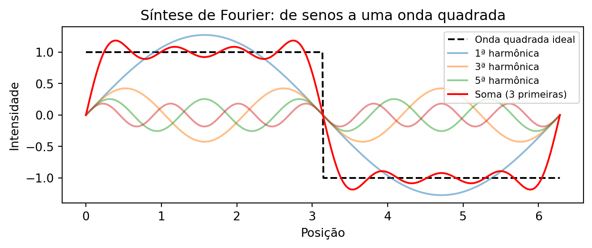
Figura 5.1: Descomposición de Fourier 1D: una onda cuadrada (línea discontinua) se aproxima mediante la suma de las primeras sinusoides (líneas de colores). Cuantos más términos, mejor la aproximación.
5.3.1 Simulador: Reconstruyendo Señales con Senoides
Antes de estudiar imágenes bidimensionales, el simulador de la Figura 5.2 ilustra el principio del análisis de Fourier para señales unidimensionales: una forma de onda puede aproximarse mediante la suma de senoides con diferentes frecuencias y amplitudes.
A medida que se añaden nuevos términos, la suma de las senoides (curva negra) se aproxima a la forma de onda de referencia (trazada). El gráfico inferior presenta el espectro de amplitudes, indicando la contribución de cada frecuencia a la reconstrucción de la señal.
TipActividad
Explore el simulador y responda:
¿Cuántos términos son necesarios para obtener una buena aproximación de la onda cuadrada?
¿Cuál de las tres formas de onda converge más rápidamente? Justifique su respuesta.
¿Cómo se altera el espectro de amplitudes al cambiar la onda cuadrada por la triangular?
NotaRespuestas
1. ¿Cuántos términos son necesarios para una buena aproximación de la onda cuadrada?
Con aproximadamente 15 a 20 términos, la forma de la onda ya se aproxima bien a la referencia. Sin embargo, cerca de las discontinuidades permanece una pequeña oscilación, conocida como fenómeno de Gibbs, que no desaparece incluso con la adición de más términos.
2. ¿Cuál forma converge más rápidamente? ¿Por qué?
La onda triangular converge más rápidamente, pues las amplitudes de sus armónicos decaen más rápido que las de la onda cuadrada y la onda de diente de sierra. Como consecuencia, pocos términos ya producen una buena aproximación.
3. ¿Cómo cambia el espectro entre la onda cuadrada y la triangular?
Ambas poseen únicamente armónicos impares, pero, en la onda triangular, las amplitudes disminuyen mucho más rápidamente. Así, pocos armónicos son suficientes para reconstruir la señal con buena precisión.
∿ Simulador: Descomposición de Fourier 1Dsuma de senoides
Términos
1
Error RMS
–
Forma Objetivo
cuadrada
Forma Objetivo
N.º de Términos
1
Visualización
Figura 5.2: Simulador interactivo de la descomposición de Fourier 1D: visualización de la suma de senoides con diferentes frecuencias, amplitudes y fases. Añada términos y observe la convergencia hacia formas de onda arbitrarias.
5.3.2 Interpretación del espectro de frecuencia
Al aplicar la Transformada Discreta de Fourier (DFT) a una imagen y visualizar el módulo de sus coeficientes (ver Figura 5.5), se obtiene el espectro de magnitud, que muestra la distribución de las frecuencias espaciales presentes en la imagen.
El coeficiente ubicado en el origen de la DFT, denominado componente DC (Direct Current), corresponde a la frecuencia nula y representa la intensidad media de la imagen. Por convención, dicho coeficiente se almacena en la esquina superior izquierda del espectro. Para facilitar su interpretación, se aplica la operación FFT Shift, que desplaza la componente DC al centro de la imagen. Tras este desplazamiento, las bajas frecuencias se concentran en la región central, mientras que las altas frecuencias se sitúan cerca de los bordes, tal como resume la Tabla 5.1.
Tabla 5.1: Correspondencia entre las regiones del espectro de magnitud tras la aplicación del FFT Shift.
Región del espectro
Componentes predominantes
Ejemplos en la imagen
Centro (bajas frecuencias)
Variaciones espaciales lentas
Iluminación, regiones homogéneas y formas globales
Región intermedia (frecuencias medias)
Variaciones de escala intermedia
Texturas y patrones repetitivos
Bordes (altas frecuencias)
Variaciones espaciales rápidas
Contornos, detalles finos y ruido
Esta organización facilita la interpretación del espectro y el diseño de filtros. La atenuación de las bajas frecuencias reduce las variaciones globales de intensidad, mientras que la atenuación de las altas frecuencias suaviza la imagen al disminuir los detalles finos y parte del ruido.
5.3.3 El Experimento de la Rejilla: Construyendo una Imagen a partir de un Único Coeficiente
Antes de presentar la formulación matemática de la Transformada Discreta de Fourier (DFT), es útil analizar su inversa, denominada Transformada Discreta Inversa de Fourier (IDFT). Considere un espectro en el que todos los coeficientes sean nulos, excepto uno. Un ejemplo de esta construcción se presenta en el código de la Figura 5.3 y puede explorarse interactivamente en el simulador de la Figura 5.4..
La imagen reconstruida es una senoide bidimensional. La posición del coeficiente en el espectro determina su orientación y su frecuencia espacial, mientras que su magnitud y su fase definen, respectivamente, su amplitud y su desplazamiento espacial. Así, cada coeficiente de la DFT representa una componente senoidal, y la imagen original puede reconstruirse mediante la suma de todas estas componentes.
import cv2N_grid =100espectro_vazio = np.zeros((N_grid, N_grid), dtype=complex)# Encendiendo un unico punto (frecuencia) fuera del centrou0, v0 =10, 5espectro_vazio[N_grid//2- v0, N_grid//2- u0] =1000# Regresando al dominio espacial (IDFT)onda_2d = np.real(np.fft.ifft2(np.fft.ifftshift(espectro_vazio)))onda_vis = cv2.normalize(onda_2d, None, 0, 255, cv2.NORM_MINMAX).astype(np.uint8)espectro_vis = cv2.normalize( np.abs(espectro_vazio), None, 0, 255, cv2.NORM_MINMAX).astype(np.uint8)# Resalte visual del puntoespectro_color = cv2.cvtColor(espectro_vis, cv2.COLOR_GRAY2BGR)cv2.circle(espectro_color, (N_grid//2- u0, N_grid//2- v0), 2, (0, 0, 255), -1)mm.show([espectro_color, onda_vis], titles=["Espectro (1 punto activo)", "Onda 2D resultante (IDFT)"], cols=2, figsize=(10, 4))
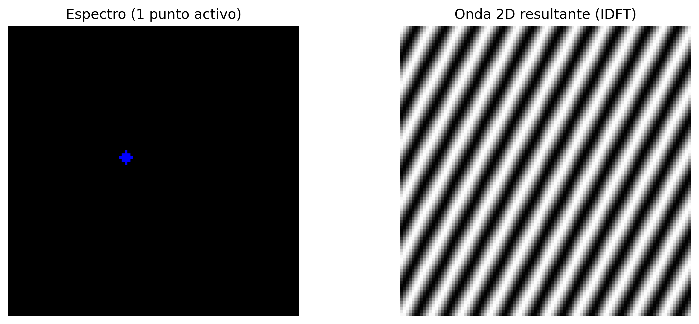
Figura 5.3: Toda frequencia en el espectro (punto aislado) corresponde a una onda sinusoidal 2D rotada en el dominio espacial.
∿ Simulador: Síntesis de Frecuencia 2D (IDFT)Espacio de Fourier
Frecuencia u
10
Frecuencia v
5
Distancia R
11.18
Ángulo θ
26.6°
Espectro (Haz clic para mover el punto)
➔
Onda 2D Resultante (Dominio Espacial)
10
5
Figura 5.4: Simulador interactivo de la síntesis de Fourier 2D. Cambie la posición horizontal (\(u\)) y vertical (\(v\)) del coeficiente en el espectro de frecuencias centrado y observe cómo la distancia respecto al centro determina la frecuencia espacial (grosor) y el ángulo determina la orientación de la onda sinusoidal generada.
5.3.4 Definición Matemática
Considere una imagen \(f(x,y)\) con dimensiones \(M \times N\). Su Transformada Discreta de Fourier 2D (DFT) se define por:
donde \(u = 0, 1, \ldots, M-1\) y \(v = 0, 1, \ldots, N-1\) representan las frecuencias discretas en las direcciones horizontal y vertical, respectivamente. El término exponencial corresponde a una senoide bidimensional, cuya frecuencia y orientación están determinadas por los índices \((u,v)\).
La Transformada Discreta Inversa de Fourier 2D (IDFT) reconstruye la imagen original a partir de sus coeficientes:
Las Ecuaciones Ecuación 5.1 y Ecuación 5.2 muestran que la DFT y la IDFT forman un par de transformaciones: la primera convierte la imagen al dominio de la frecuencia, mientras que la segunda reconstruye exactamente la imagen original a partir de sus coeficientes.
NotaSobre el símbolo \(j\)
El término \(j\) denota la unidad imaginaria, definida por \(j^2 = -1\). En ingeniería y procesamiento de señales, se adopta \(j\) en lugar de \(i\) para evitar conflictos con la notación de corriente eléctrica. Su uso en la exponencial compleja, regida por la fórmula de Euler (\(e^{j\theta} = \cos\theta + j\sin\theta\)), permite representar de forma compacta la amplitud y la fase de cada frecuencia espacial presente en la imagen.
Nota¿Qué es el componente DC?
El coeficiente \(F(0,0)\), denominado componente DC (Direct Current), es igual a la suma de las intensidades de todos los píxeles de la imagen (ver Figura 5.5):
\[
F(0,0)=MN\,\bar{f},
\]
donde \(\bar{f}\) es la intensidad media de la imagen. Por ello, el componente DC representa el nivel medio de intensidad y, en la mayoría de las imágenes naturales, posee la mayor magnitud del espectro.
Los demás coeficientes representan variaciones en torno a esa media. Tras la aplicación del FFT Shift, el componente DC se desplaza al centro del espectro, concentrando las bajas frecuencias en la región central y las altas frecuencias en los bordes.
Anatomía del Espectro de Fourier 2D (tras fftshift)
Figura 5.5: Diagrama conceptual del espectro de Fourier 2D centrado.
5.3.5 Magnitud y Fase
Cada coeficiente de la Transformada Discreta de Fourier (DFT) es un número complejo y puede escribirse como
\[
F(u,v)=R(u,v)+j\,I(u,v),
\]
donde \(R(u,v)\) e \(I(u,v)\) corresponden, respectivamente, a las partes real e imaginaria del coeficiente. De la Ecuación Ecuación 5.1, se obtienen
Así, cada coeficiente también puede escribirse en su forma polar,
\[
F(u,v)=|F(u,v)|\,e^{j\phi(u,v)}.
\]
El espectro de Fourier puede, por tanto, visualizarse mediante dos imágenes distintas: el espectro de magnitud, normalmente utilizado para analizar la distribución de las frecuencias, y el espectro de fase, que describe la organización espacial de las componentes senoidales.
Aunque el espectro de magnitud sea el más utilizado para la inspección visual, la fase contiene gran parte de la información estructural de la imagen. La combinación de magnitud y fase permite reconstruir exactamente la imagen original mediante la IDFT.
5.3.6 ¿Qué transportan la magnitud y la fase?
Una demostración clásica consiste en combinar la magnitud de una imagen con la fase de otra y reconstruir el resultado. Este experimento evidencia que:
La fase preserva la estructura espacial de la imagen, incluida la posición de los objetos, sus contornos y su geometría. Pequeñas alteraciones en la fase pueden provocar grandes cambios visuales.
La magnitud controla cómo se distribuye la energía entre las frecuencias espaciales, influyendo principalmente en el contraste y la textura.
Cuando una imagen se reconstruye con la magnitud de A y la fase de B, el resultado tiende a parecerse más a B que a A, evidenciando que la fase es el principal componente responsable de la organización espacial de la escena. Sin embargo, la magnitud sigue siendo importante, ya que modula el contraste de las estructuras reconstruidas. Así, una reconstrucción fiel depende de la combinación coherente entre magnitud y fase.
Un ejemplo de este comportamiento se presenta en la Figura 5.6.
NotaAnalogía con el Audio: Limitaciones y Precauciones
La fase de una señal desempeña papeles distintos en audio e imágenes:
Audio estéreo o multicanal: la fase relativa entre los canales es fundamental para la percepción de la posición de las fuentes sonoras, mediante las diferencias interaurales de tiempo (ITD, Interaural Time Differences).
Audio monoaural: la fase absoluta ejerce poca influencia perceptual directa.
Imágenes (DFT): la fase es el principal factor responsable de la organización espacial de la escena, mientras que la magnitud modula el contraste y la distribución de la energía entre las frecuencias.
En ambos dominios, la magnitud está relacionada con la intensidad de los componentes de frecuencia: en audio, influye en el timbre y la intensidad percibida; en imágenes, influye en el contraste y la textura.
# ── Experimento: La Importancia de la Fase ───────────────────────────────────────# ── Carga de la imagen ────────────────────────────────────────────────────url ="https://upload.wikimedia.org/wikipedia/commons/2/25/GAZI.MD.AHAD_11.jpg"caminho ="imagens/coins.jpg"ifnot os.path.exists(caminho): os.makedirs("imagens", exist_ok=True) img_obj = mm.read(url, pil=True) mm.write(img_obj, caminho)else: img_obj = mm.read(caminho, pil=True)img_color = np.array(img_obj)img_gray = mm.gray(img_color)img_a = cv2.resize(img_gray, (400, 400))# Crear una imagen B sintética (patrón geométrico)img_b = np.zeros((400, 400), dtype=np.uint8)cv2.rectangle(img_b, (100, 100), (300, 300), 255, -1)cv2.circle(img_b, (200, 200), 150, 128, 10)FA = np.fft.fft2(img_a)FB = np.fft.fft2(img_b)# Intercambio de Faserec_A_mag_B_fase = np.real(np.fft.ifft2(np.abs(FA) * np.exp(1j* np.angle(FB))))rec_B_mag_A_fase = np.real(np.fft.ifft2(np.abs(FB) * np.exp(1j* np.angle(FA))))mm.show( [img_a, img_b, rec_A_mag_B_fase, rec_B_mag_A_fase], titles=["Imagen A", "Imagen B", "Mag(A) + Fase(B)", "Mag(B) + Fase(A)"], cols=4, figsize=(16, 4))print("💡 La fase preserva bordes y contornos; la magnitud controla contraste y")print("textura. En audio estéreo, la fase afecta la localización espacial; en")print("imágenes, determina la organización de la escena.")
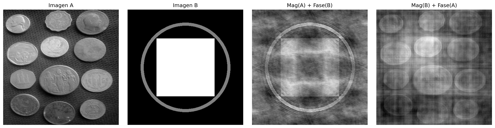
Figura 5.6: Experimento de intercambio de fase: Imagen A (monedas) e Imagen B (patrón geométrico) reconstruidas con magnitudes y fases intercambiadas. El resultado muestra que la estructura visual es mucho más sensible a la fase que a la magnitud: cuando la fase de B se mantiene, la imagen resultante preserva la organización espacial de B, incluso con la magnitud de A. La magnitud, por su parte, influye principalmente en el contraste y la textura. Observe que la calidad de la reconstrucción no es perfecta — hay artefactos visibles —, evidenciando la interdependencia entre fase y magnitud para una representación fiel de la imagen.
💡 La fase preserva bordes y contornos; la magnitud controla contraste y
textura. En audio estéreo, la fase afecta la localización espacial; en
imágenes, determina la organización de la escena.
5.4 Teorema de la Convolución y Estrategias de Filtrado
El Teorema de la Convolución establece una relación fundamental entre los dominios espacial y de la frecuencia:
donde \(\circledast\) representa la convolución circular discreta. Así, la convolución entre una imagen \(f(x,y)\) y un filtro \(h(x,y)\) puede sustituirse por la multiplicación de sus espectros.
En la práctica, para obtener el mismo resultado de la convolución lineal realizada en el dominio espacial, se aplica relleno con ceros (zero-padding) antes de la Transformada Rápida de Fourier (FFT), evitando artefactos en los bordes de la imagen.
Sin embargo, no siempre el filtrado en el dominio de la frecuencia es la alternativa más eficiente. Para filtros como el gaussiano y el filtro de la media (Box Filter), la propiedad de separabilidad permite reducir significativamente el costo computacional de la convolución en el dominio espacial.
5.4.1Kernel Separable vs. No separable
Un kernel separable puede escribirse como el producto externo de dos vectores unidimensionales,
\[
H = v\,h^T,
\]
lo que permite que la convolución bidimensional se reemplace por dos convoluciones unidimensionales consecutivas: una en la dirección horizontal y otra en la vertical.
En cambio, un kernel no separable no admite esta descomposición y, por lo tanto, su convolución debe realizarse directamente sobre la vecindad bidimensional.
En la práctica, para un kernel de dimensión \(K \times K\), la convolución directa requiere \(K^2\) multiplicaciones por píxel, mientras que un kernel separable requiere solo \(2K\) multiplicaciones, reduciendo significativamente el costo computacional.
5.4.2 Análisis de Eficiencia Computacional
Considere una imagen de dimensiones \(M \times N\) y un filtro cuadrado de tamaño \(K \times K\). La Tabla 5.2 compara la complejidad de las principales estrategias de filtrado.
Tabla 5.2: Comparación de la complejidad de la convolución directa, separable y vía Transformada Rápida de Fourier (FFT).
Método de Filtrado
Complejidad Asintótica
Dependencia de \(K\)
Aplicación típica
Espacial no separable
\(\mathcal{O}(MNK^2)\)
Cuadrática
Kernels pequeños y no separables
Espacial separable
\(\mathcal{O}(MNK)\)
Lineal
Filtros Gaussiano y de la media
Vía FFT
\(\mathcal{O}(MN\log(MN))\)
Independiente de \(K\)
Kernels grandes
Para kernels pequeños, la convolución espacial, especialmente cuando el filtro es separable, suele ser más eficiente debido al bajo costo de las operaciones. A medida que el tamaño del kernel aumenta, el filtrado vía FFT se vuelve más ventajoso, ya que su costo prácticamente no depende de la dimensión del filtro.
5.4.3 Discusión de los resultados experimentales
El gráfico obtenido en el ensayo con la imagen de las monedas (\(2560 \times 1920\)), presentado en la Figura 5.7, confirma el comportamiento previsto por el análisis de complejidad computacional.
Convolución no separable (\(\mathcal{O}(MNK^2)\))
La convolución directa presenta un crecimiento cuadrático con el tamaño del kernel. Para valores pequeños de \(K\), el costo es bajo, pero aumenta rápidamente a medida que el kernel crece, volviéndose inviable para aplicaciones en tiempo real.
Filtrado mediante FFT (\(\mathcal{O}(MN \log(MN))\))
El costo de la FFT depende únicamente del tamaño de la imagen, siendo independiente de \(K\). Por ello, su rendimiento permanece aproximadamente constante al variar el kernel, lo que la hace ventajosa para filtros grandes o no separables.
Convolución separable (\(\mathcal{O}(MNK)\))
La descomposición del kernel en dos filtros unidimensionales reduce significativamente el costo computacional. En la práctica, este enfoque tiende a ser el más eficiente para filtros separables, especialmente en implementaciones optimizadas.
En general, la elección del método depende del tamaño y la estructura del kernel. Los filtros separables son más eficientes en el dominio espacial, mientras que la FFT resulta más ventajosa para kernels grandes o múltiples convoluciones en el dominio de la frecuencia.
\[
g = \mathcal{F}^{-1}\bigl[\mathcal{F}(f)\cdot \mathcal{F}(h)\bigr]
\quad \text{(FFT)}
\qquad
g = f \circledast h
\quad \text{(convolución directa)}
\qquad
g = (f \circledast v) \circledast h^T
\quad \text{(separable)}
\tag{5.4}\]
donde:
\(f(x,y)\) representa la imagen de entrada;
\(h(x,y)\) es el kernel bidimensional del filtro;
\(v\) y \(h^T\) son, respectivamente, los vectores vertical y horizontal que componen el kernel separable.
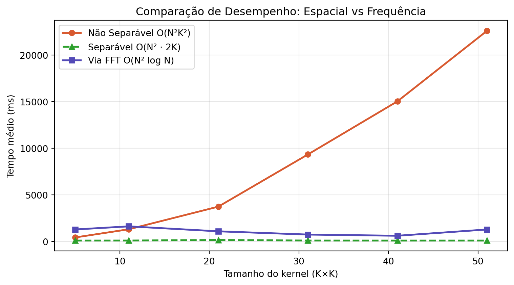
Figura 5.7: Comparación de eficiencia: Convolución No Separable (Espacial 2D), Separable (Espacial 1D) y vía FFT.
ImportanteEl problema de la convolución circular (wrap-around)
La Transformada Discreta de Fourier (DFT) asume que la imagen se extiende periódicamente en el espacio, es decir, que sus bordes se repiten indefinidamente.
En esta condición, la multiplicación en el dominio de la frecuencia corresponde a una convolución circular en el dominio espacial. Como consecuencia, regiones opuestas de la imagen (parte superior e inferior, izquierda y derecha) interactúan artificialmente, tal como se ilustra en Figura 5.8.
La aplicación de zero-padding antes de la FFT reduce este efecto al extender la imagen con valores nulos en los bordes, aproximando el resultado a la convolución lineal. Este comportamiento puede interpretarse a la luz del Teorema de la Convolución, presentado en Figura 5.9.
# ── Definir M y N ────────────────────────────────────────────────────────────M, N = img_gray.shape # línea agregada# Simulación de un filtro de desplazamiento bruscoH_shift = np.zeros_like(img_gray, dtype=complex)for u inrange(M):for v inrange(N): H_shift[u, v] = np.exp(-1j*2* np.pi * (u*120/M + v*120/N))# Filtrado SIN padding (causa el wrap-around)F_img = np.fft.fft2(img_gray)img_vazada = np.real(np.fft.ifft2(F_img * H_shift))img_vazada_vis = cv2.normalize(img_vazada, None, 0, 255, cv2.NORM_MINMAX).astype(np.uint8)mm.show([img_gray, img_vazada_vis], titles=["Original", "Filtrado sin Padding (Fuga)"], cols=2, figsize=(10, 4))
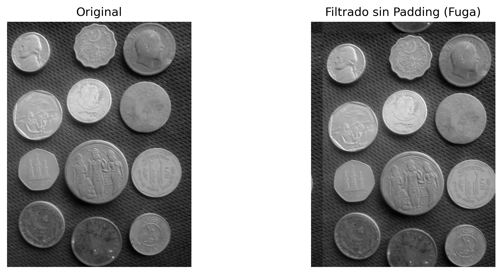
Figura 5.8: Sin padding, un desplazamiento severo hace que la imagen se filtre al lado opuesto (convolución circular).
# ── Kernel Gaussiano 11×11 sigma =3.0K =11ks = np.arange(K) - K //2gauss1d = np.exp(-ks**2/ (2* sigma**2))gauss1d /= gauss1d.sum()kernel = np.outer(gauss1d, gauss1d) # kernel 2D separable# ── Método 1: Convolución espacial directa ─────────────────────────────────────f_float = img_gray.astype(np.float64)conv_esp = cv2.filter2D(f_float, -1, kernel, borderType=cv2.BORDER_CONSTANT)# ── Método 2: Multiplicación en frecuencia (vía FFT) ──────────────────────────M, N = f_float.shape# Padding para convolución lineal (evita aliasing circular)Mpad =2**int(np.ceil(np.log2(M + K -1)))Npad =2**int(np.ceil(np.log2(N + K -1)))# Posiciona el kernel con el origen en el (0,0) y padding con ceroskernel_pad = np.zeros((Mpad, Npad))kh, kw = kernel.shapekernel_pad[:kh, :kw] = kernelF_img = np.fft.fft2(f_float, (Mpad, Npad))F_kern = np.fft.fft2(kernel_pad)conv_freq = np.real(np.fft.ifft2(F_img * F_kern))# Recorte para compensar el desplazamiento introducido por el posicionamiento del kerneloffset = K //2conv_freq_crop = conv_freq[offset:offset+M, offset:offset+N]# ── Verificación numérica ──────────────────────────────────────────────────────diff = np.abs(conv_esp - conv_freq_crop)print(f"Diferenza máxima (|conv_esp - conv_freq|): {diff.max():.2e}")print(f"Diferenza media (|conv_esp - conv_freq|): {diff.mean():.2e}")print(f"→ Teorema de la Convolución verificado numéricamente.")conv_esp_vis = cv2.normalize(conv_esp, None, 0, 255, cv2.NORM_MINMAX).astype(np.uint8)conv_freq_vis = cv2.normalize(conv_freq_crop, None, 0, 255, cv2.NORM_MINMAX).astype(np.uint8)diff_vis = cv2.normalize(diff, None, 0, 255, cv2.NORM_MINMAX).astype(np.uint8)mm.show( [img_gray, conv_esp_vis, conv_freq_vis, diff_vis], titles=["Original","Convolución espacial","Multiplicación en frecuencia",f"Diferencia (máx={diff.max():.1e})" ], cols=4, figsize=(16, 5))
Diferenza máxima (|conv_esp - conv_freq|): 2.56e-13
Diferenza media (|conv_esp - conv_freq|): 2.76e-14
→ Teorema de la Convolución verificado numéricamente.
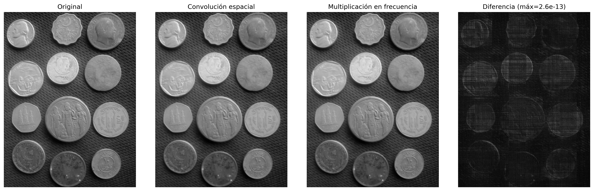
Figura 5.9: Verificación del Teorema de la Convolución: la diferencia píxel a píxel entre la convolución espacial (cv2.filter2D) y la multiplicación en frecuencia (FFT) es numéricamente nula — confirmando la equivalencia teórica.
NotaSobre la diferencia numérica
La diferencia residual del orden de \(10^{-13}\) no viola el Teorema de la Convolución, sino que refleja limitaciones computacionales inherentes a la aritmética de coma flotante (doble precisión, ~\(10^{-16}\)) y al orden de las operaciones entre los dos métodos:
Convolución espacial: suma ponderada de vecinos con redondeos sucesivos.
Convolución en frecuencia: involucra tres transformadas FFT y una multiplicación compleja, sujeta a errores de truncamiento y cuantización.
Por lo tanto, la igualdad teórica es exacta, pero la implementación numérica produce una diferencia prácticamente nula (error relativo < \(10^{-12}\)), lo que confirma el teorema dentro de la precisión de la máquina.
5.5 Filtros en el dominio de la frecuencia
Un filtro en el dominio de la frecuencia puede interpretarse como una función de transferencia aplicada al espectro de la imagen. En esta representación, cada coeficiente de frecuencia se multiplica por un valor entre 0 y 1, que determina su atenuación o preservación. La forma de esta función define el efecto visual del filtro.
Corte abrupto y ringing. Los filtros ideales con transición instantánea en una frecuencia de corte \(D_0\) producen discontinuidades en el dominio de la frecuencia. Esta discontinuidad se refleja en el dominio espacial como oscilaciones cercanas a los bordes, conocidas como ringing. Este efecto está asociado a la convolución con funciones de soporte infinito en el espacio, como la función sinc, tal como se ilustra en la Figura 5.10.
Filtros con transición suave. Alternativas como los filtros gaussiano y Butterworth suavizan la transición entre las regiones de paso y de rechazo, reduciendo el ringing. En contrapartida, esta suavización implica una frontera de separación menos definida entre las frecuencias preservadas y las atenuadas.
# Simulando el Filtro Ideal en la Frecuencia (Cilindro) y su representación Espacial (Sinc)N_grid =2**7u = np.arange(-N_grid//2, N_grid//2)U, V = np.meshgrid(u, u)D = np.sqrt(U**2+ V**2)# Frecuencia: Cilindro Ideal (1 en el centro, 0 fuera del radio 20)H_freq = np.zeros((N_grid, N_grid))H_freq[D <=20] =1# Espacio: La inversa resulta en la famosa Sinc 2Dh_space = np.fft.fftshift(np.real(np.fft.ifft2(np.fft.ifftshift(H_freq))))fig, ax = plt.subplots(1, 2, subplot_kw={'projection': '3d'}, figsize=(12, 4))ax[0].plot_surface(U, V, H_freq, cmap='viridis', edgecolor='none')ax[0].set_title("Frequência: Filtro Ideal (Cilindro)")ax[0].set_zlim(0, 1.2)ax[1].plot_surface(U, V, h_space, cmap='plasma', edgecolor='none')ax[1].set_title("Espaço Real: Ondulações da Sinc (Causa do Ringing)")plt.tight_layout(); plt.show()
Figura 5.10: Una Dualidad Peligrosa: El corte abrupto en la Frecuencia (Cilindro) se transforma obligatoriamente en una Sinc espacial. Sus ondulaciones causan el ringing fantasma en los bordes de la imagen.
5.5.1 Filtros Pasa-Bajos
Los filtros pasa-bajos atenúan los componentes de alta frecuencia, lo que resulta en un suavizado de la imagen y una reducción del ruido. Tras la centralización del espectro (FFT Shift), la distancia de cada punto al centro viene dada por:
El corte abrupto en \(D_0\) introduce discontinuidades en el dominio de la frecuencia, lo que da lugar a oscilaciones en el dominio espacial conocidas como ringing. Este efecto está asociado con la convolución con funciones de soporte infinito.
La suavidad de la función gaussiana en el dominio de la frecuencia evita discontinuidades, lo que elimina el ringing y produce una transición gradual entre las frecuencias preservadas y las atenuadas.
Filtro de Butterworth (LPFB) de orden \(n\):\[
H_{\text{BW}}(u,v) = \frac{1}{1 + \left[D(u,v)/D_0\right]^{2n}}
\tag{5.8}\]
El parámetro \(n\) controla la suavidad de la transición entre el paso y el rechazo de frecuencias. Los valores pequeños producen transiciones suaves, mientras que los valores grandes aproximan el comportamiento del filtro ideal, con un mayor riesgo de ringing. En la Figura 5.11. se presenta un ejemplo comparativo.
Perfis de los Filtros Pasa-Baja — comparación visual (D₀ = 30)
A medida que aumenta la orden del Butterworth, el perfil se acerca al filtro Ideal — y el ringing aumenta.
Figura 5.11: Filtros pasa-baja.
5.5.2 Filtros Pasa-Alto y Pasa-Banda
Los filtros pasa-alto pueden obtenerse a partir de un filtro pasa-bajo complementario, definido como:
\[
H_{\text{HP}}(u,v) = 1 - H_{\text{LP}}(u,v)
\]
Este tipo de filtro preserva componentes de alta frecuencia, resaltando bordes y detalles, mientras atenúa regiones de variación suave.
Los filtros pasa-banda preservan solo un rango intermedio de frecuencias, limitado por dos radios \(D_L\) y \(D_H\):
Este tipo de filtrado es útil cuando se desea eliminar simultáneamente componentes de baja y alta frecuencia, preservando únicamente estructuras de escala intermedia.
Una aplicación importante es la eliminación de ruido periódico, en la cual patrones regulares aparecen como picos localizados en el espectro de magnitud. Estos picos pueden atenuarse mediante filtros notch (rechaza-banda), posicionados específicamente en las frecuencias no deseadas.
🎛️ Simulador: Filtros en el Dominio de la FrecuenciaPasa-Baja / Pasa-Alta
Frecuencia de corte D₀30Tipo de filtro
Respuesta H(D)
Espectro filtrado |F · H|
Señal 1D — original vs filtrada
Energía retenida por banda (%)
Figura 5.12: Simulador interactivo de filtros en el dominio de la frecuencia.
import iodef distancia_centro(M, N):"""Matriz de distancias al centro del espectro.""" u = np.arange(M) - M //2 v = np.arange(N) - N //2 V, U = np.meshgrid(v, u)return np.sqrt(U**2+ V**2)def aplicar_filtro_freq(img, H):"""Aplica filtro H (centrado) a imagen mediante FFT.""" F = np.fft.fftshift(np.fft.fft2(img.astype(np.float64))) Fg = F * H g = np.real(np.fft.ifft2(np.fft.ifftshift(Fg)))return cv2.normalize(g, None, 0, 255, cv2.NORM_MINMAX).astype(np.uint8)M, N = img_gray.shapeD = distancia_centro(M, N)D0 =30# frecuencia de corten_bw =2# orden del Butterworth# ── Funciones de transferencia ──────────────────────────────────────────────────H_ideal = (D <= D0).astype(np.float64)H_gauss = np.exp(-D**2/ (2* D0**2))H_bw =1.0/ (1.0+ (D / D0)**(2* n_bw))# ── Imágenes filtradas ─────────────────────────────────────────────────────────img_ideal = aplicar_filtro_freq(img_gray, H_ideal)img_gauss = aplicar_filtro_freq(img_gray, H_gauss)img_bw = aplicar_filtro_freq(img_gray, H_bw)# ── Perfiles de H(u,v) ─────────────────────────────────────────────────────────def fig2img(fig): b = io.BytesIO(); fig.savefig(b, format='png', dpi=100); plt.close(fig); b.seek(0)return (plt.imread(b)[:,:,:3]*255).astype(np.uint8)fig, ax = plt.subplots(figsize=(6, 3))linha = M //2ax.plot(H_ideal[linha, :], label="Ideal", color="#D85A30", lw=1.5, ls="--")ax.plot(H_gauss[linha, :], label="Gaussiano", color="#1D9E75", lw=1.5)ax.plot(H_bw[linha, :], label="Butterworth", color="#534AB7", lw=1.5)ax.axvline(N//2-D0, color="#aaa", lw=0.8, ls=":")ax.axvline(N//2+D0, color="#aaa", lw=0.8, ls=":")ax.set(title="Perfis H(u,v) — linha central", xlabel="v", ylabel="H(u,v)")ax.legend(fontsize=8); plt.tight_layout()perfil_img = fig2img(fig)# ── Filtros H visualizados ────────────────────────────────────────────────────def H_vis(H):return cv2.normalize((H*255).astype(np.uint8), None, 0, 255, cv2.NORM_MINMAX)mm.show( [img_gray, img_ideal, img_gauss, img_bw, H_vis(H_ideal), H_vis(H_gauss), H_vis(H_bw), perfil_img], titles=["Original", "LPF Ideal", "LPF Gaussiano", "LPF Butterworth (n=2)","H Ideal", "H Gaussiano","H Butterworth", "Perfiles H(u,v)" ], cols=4, figsize=(16, 9))
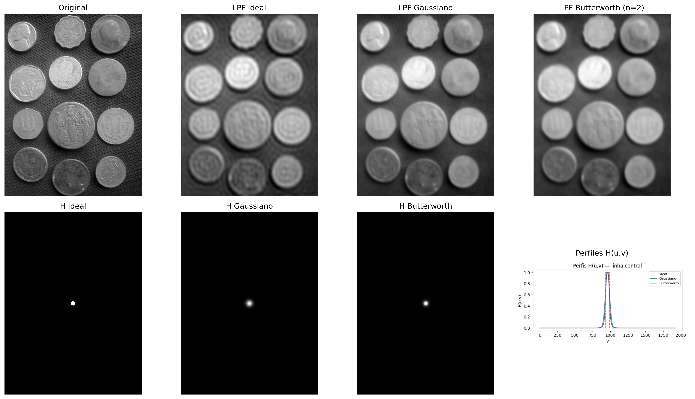
Figura 5.13: Comparación entre filtros pasa-baja: Ideal (D₀=30), Gaussiano (D₀=30) y Butterworth (D₀=30, n=2). Perfiles de H(u,v) a lo largo de una línea central e imágenes filtradas correspondientes.
# Filtro pasa-alta: complemento del pasa-baja Gaussiano# Reutiliza aplicar_filtro_freq() definida en la celda anteriorH_alta =1- H_gaussimg_alta = aplicar_filtro_freq(img_gray, H_alta)mm.show( [img_gray, img_alta], titles=["Original", "Pasa-alta Gaussiano ($D_0=30$)"], cols=2)
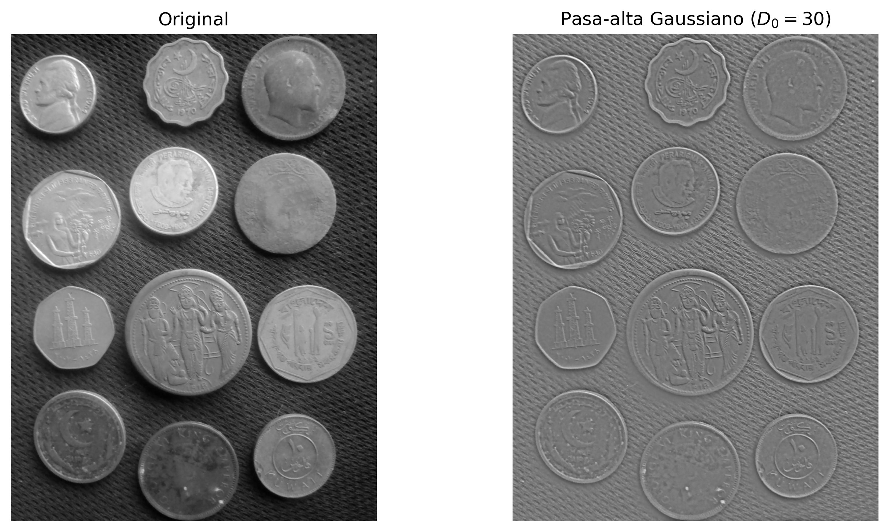
Figura 5.14: Filtro pasa-alta Gaussiano. (a) Original; (b) Filtro pasa-alta (D₀=30) - los bordes de las monedas y el fondo texturizado se resaltan.
5.5.3 Eliminación de Ruido Periódico
El ruido periódico — asociado a interferencias eléctricas, patrones regulares de sensores o artefactos de digitalización — aparece en el espectro de Fourier como picos puntuales simétricos alrededor del centro.
El filtro rechaza-banda (notch) atenúa selectivamente esas frecuencias, preservando las demás componentes de la imagen. Un ejemplo de aplicación se presenta en la Figura 5.15..
# ── Imagen con ruido periódico sintético ──────────────────────────────────────h_img, w_img = img_gray.shapex = np.arange(w_img)y = np.arange(h_img)X, Y = np.meshgrid(x, y)# Usar frecuencias enteras y consistentes (importante para restauración perfecta)u0, v0 =20, 20# frecuencias exactas del ruidoruido =40* np.sin(2* np.pi * (u0 * X / w_img + v0 * Y / h_img))img_ruidosa = np.clip(img_gray.astype(np.float64) + ruido, 0, 255).astype(np.uint8)# ── Espectro de la imagen ruidosa ───────────────────────────────────────────────F_r = np.fft.fftshift(np.fft.fft2(img_ruidosa.astype(np.float64)))mag_r = np.log1p(np.abs(F_r))mag_vis = cv2.normalize(mag_r, None, 0, 255, cv2.NORM_MINMAX).astype(np.uint8)# ── Máscara notch ────────────────────────────────────────────────────────────mascara = np.ones((h_img, w_img), dtype=np.float64)r_notch =8# radio del notch (ajuste fino si es necesario)def suprimir_pico(mask, cy, cx, r):"""Pone a cero un disco de radio r centrado en (cy, cx)""" yy, xx = np.ogrid[:mask.shape[0], :mask.shape[1]] dist = np.sqrt((yy - cy)**2+ (xx - cx)**2) mask[dist <= r] =0return mask# Coordenadas centralescy, cx = h_img //2, w_img //2# Suprimir los 4 picos simétricos (¡importante!)for dy, dx in [(v0, u0), (-v0, -u0), (v0, -u0), (-v0, u0)]: mascara = suprimir_pico(mascara, cy + dy, cx + dx, r_notch)mascara_vis = (mascara *255).astype(np.uint8)# ── Filtrado y reconstrucción ─────────────────────────────────────────────────F_filtrada = F_r * mascaraimg_rest = np.real(np.fft.ifft2(np.fft.ifftshift(F_filtrada)))img_rest_vis = cv2.normalize(img_rest, None, 0, 255, cv2.NORM_MINMAX).astype(np.uint8)# Evaluaciónpsnr = cv2.PSNR(img_gray, img_rest_vis)ssim = cv2.SSIM(img_gray, img_rest_vis) ifhasattr(cv2, 'SSIM') else"N/A"#ssim = ssim_sk(img_gray, img_rest_vis, data_range=255)print(f"PSNR (original vs restaurada): {psnr:.2f} dB")# ── Visualización ─────────────────────────────────────────────────────────────mm.show( [img_ruidosa, mag_vis, mascara_vis, img_rest_vis], titles=["Con ruido periódico","Espectro (log)","Máscara notch",f"Restaurada (PSNR={psnr:.1f} dB)" ], cols=4, figsize=(16, 4))
PSNR (original vs restaurada): 32.93 dB
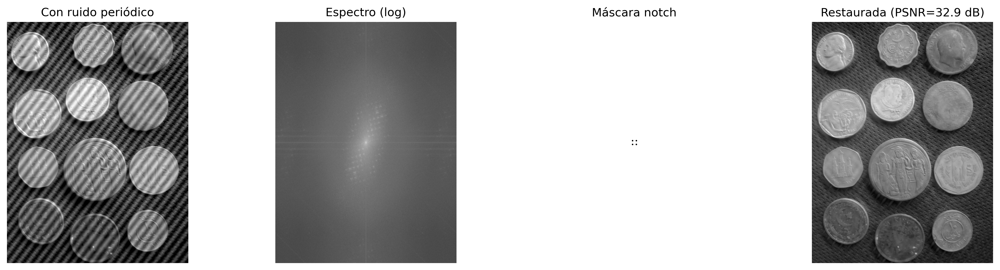
Figura 5.15: Eliminación de ruido periódico mediante filtro notch en el dominio de la frecuencia: (a) imagen con ruido senoidal, (b) espectro mostrando los picos del ruido, (c) máscara notch centrada en los picos, (d) imagen restaurada.
📌 Síntesis — Filtros Espectrales
Filtro
Efecto visual
Artefacto
Uso
Paso-bajo ideal
Suavizado intenso
Ringing
Ilustrativo
Paso-bajo gaussiano
Suavizado suave
No presenta ringing
Suavizado general
Paso-bajo Butterworth
Suavizado controlado
Ringing (órdenes altos)
Compromiso entre suavizado y selectividad
Paso-alto
Realce de bordes
Amplificación de ruido
Detección de contornos
Notch
Eliminación selectiva de frecuencias
Posibles distorsiones locales
Eliminación de ruido periódico
El diseño de filtros en el dominio de la frecuencia consiste en la definición de máscaras espectrales. Sin embargo, efectos en el dominio espacial, como ringing y desenfoque, emergen directamente de esas elecciones en el espectro.
5.6Wavelets y Multirresolución
La Transformada de Fourier descompone la señal en frecuencias globales: cada coeficiente \(F(u,v)\) recibe contribuciones de toda la imagen, sin información explícita sobre la ubicación espacial de esas frecuencias. Así, las estructuras localizadas, como los bordes, se representan de forma distribuida en el espectro.
Las wavelets (ondículas) superan esta limitación al utilizar funciones base localizadas en el espacio, que pueden ser desplazadas y escaladas. Estas funciones poseen soporte compacto, es decir, son diferentes de cero solo en una región finita del dominio, permitiendo una representación simultánea en términos de frecuencia y ubicación espacial.
5.6.1 El Límite de la Transformada de Fourier: localización espacial
La Transformada de Fourier describe con precisión qué frecuencias están presentes en una señal, pero no representa explícitamente dónde ocurren esas frecuencias en el espacio.
En el experimento presentado en la Figura 5.16, dos imágenes con estructuras localizadas en posiciones diferentes producen espectros de magnitud prácticamente idénticos. Esto ocurre porque la representación de Fourier es global: cada coeficiente recibe contribución de toda la imagen.
Como consecuencia, el espectro de magnitud no representa explícitamente la localización de bordes u otras estructuras, solo la distribución de las frecuencias presentes. Esta limitación motivó el desarrollo de representaciones multirresolución, como la Transformada Wavelet Discreta (DWT), capaces de describir simultáneamente la frecuencia y la localización espacial de las estructuras de la imagen.
Figura 5.16: La transformada de Fourier global es ciega a la posición. Los espectros no dicen dónde están los bordes.
5.6.2 Transformada Wavelet Discreta 2D
La Transformada Wavelet Discreta (DWT) aplica, de manera separada en las direcciones horizontal y vertical, dos filtros complementarios: un pasa-bajos\(h\) (aproximación) y un pasa-altos\(g\) (detalles), seguidos de un submuestreo por un factor de 2 en cada dimensión. Este proceso produce cuatro subbandas, cuyos nombres indican la combinación de los filtros aplicados en cada dirección (L = Low-pass, pasa-bajos; H = High-pass, pasa-altos). Las características de cada subbanda se resumen en la Tabla 5.3.
Tabla 5.3: Subbandas producidas por la Transformada Wavelet Discreta 2D (DWT), indicando los filtros aplicados en cada dirección y el contenido predominante de cada componente.
Subbanda
Filtros aplicados
Contenido visual
LL
baja × baja
Aproximación de la imagen (versión suavizada y reducida)
LH
baja × alta
Bordes horizontales y variaciones verticales
HL
alta × baja
Bordes verticales y variaciones horizontales
HH
alta × alta
Detalles diagonales y texturas
La descomposición puede aplicarse recursivamente sobre la subbanda LL, generando una representación multirresolución. Tras \(J\) niveles, se obtiene una estructura con \(3J+1\) subbandas, donde cada nuevo nivel reduce la resolución de la componente de aproximación.
NotaConexión con CNNs
La descomposición multirresolución de las wavelets posee una relación conceptual con las representaciones jerárquicas utilizadas en redes neuronales convolucionales (CNNs). En ambos casos, sucesivas etapas de filtrado y reducción de resolución producen descripciones cada vez más abstractas de la imagen. Sin embargo, las wavelets utilizan filtros matemáticamente definidos y reconstruibles, mientras que las CNNs aprenden sus filtros durante el entrenamiento.
5.6.3 Familias de Wavelets
Diferentes familias de wavelets presentan compromisos distintos entre soporte espacial, suavidad y capacidad de compresión. El soporte corresponde a la extensión de la función wavelet en el dominio espacial: cuanto menor es el soporte, más localizada está la función; cuanto mayor es, más suave tiende a ser su representación, aunque con un mayor costo computacional. La Tabla 5.4 compara algunas de las familias más utilizadas.
Tabla 5.4: Comparación entre familias de wavelets, destacando la longitud del soporte, el número de momentos nulos, la simetría y las aplicaciones típicas.
Wavelet
Longitud del soporte
Momentos nulos
Simetría
Uso típico
Haar
2
1
Asimétrica
Introducción y análisis básico
Daubechies db4
8
4
Asimétrica
Compresión y análisis general
Symlet sym4
8
4
Casi simétrica
Reconstrucción de señales
Biortogonal 5/3
5/3
2/2
Simétrica
JPEG 2000 sin pérdida
Biortogonal 9/7
9/7
4/4
Simétrica
JPEG 2000 con pérdida
Los momentos nulos miden la capacidad de la wavelet para representar regiones suaves de la imagen con pocos coeficientes distintos de cero. Una wavelet con \(p\) momentos nulos anula exactamente polinomios de grado hasta \(p-1\). En consecuencia, cuanto mayor es el número de momentos nulos, mayor tiende a ser la eficiencia de compresión en regiones homogéneas, aunque esto generalmente implica funciones con un soporte más largo.
La Figura 5.17 presenta las funciones de base (wavelets) \(\psi(t)\) en el dominio espacial. Estas funciones poseen soporte compacto, es decir, son distintas de cero solo en una región finita del dominio, a diferencia de las sinusoides de la Transformada de Fourier, que se extienden por todo el dominio.
Figura 5.17: Funciones de la Wavelet (ψ). Obsérvese cómo decaen rápidamente a cero (soporte compacto), a diferencia de las sinusoides infinitas de Fourier.
El diagrama de la Figura 5.18 ilustra el análisis multirresolución realizado por la DWT, en el cual la subbanda de aproximación (LL) se descompone sucesivamente, formando una representación jerárquica con dos niveles.
Figura 5.18: Diagrama de la descomposición wavelet 2D en dos niveles.
El simulador de la Figura 5.19 permite explorar interactivamente la Transformada Wavelet Discreta 2D (DWT) utilizando la wavelet de Haar. La descomposición en subbandas evidencia la separación entre la componente de aproximación y las componentes de detalle de la imagen.
Los diferentes patrones de entrada permiten observar el comportamiento direccional de los filtros. En imágenes con bordes horizontales y verticales, las subbandas LH y HL destacan, respectivamente, las variaciones verticales y horizontales de la intensidad. En regiones de variación suave, la mayor parte de la energía se concentra en la subbanda de aproximación LL, mientras que las subbandas de detalle presentan coeficientes cercanos a cero.
El análisis multirresolución también se puede observar al aumentar el número de niveles de descomposición. En este caso, solo la subbanda \(\text{LL}_1\) se descompone nuevamente, dando origen a las subbandas \(\text{LL}_2\), \(\text{LH}_2\), \(\text{HL}_2\) y \(\text{HH}_2\), que forman el segundo nivel de la representación jerárquica.
En patrones formados por regiones homogéneas de gran extensión, como un degradado suave o un tablero compuesto por bloques grandes, la energía permanece predominantemente concentrada en la subbanda LL. En el degradado, esto ocurre porque las diferencias entre píxeles vecinos son pequeñas. En el tablero, por su parte, los píxeles poseen prácticamente la misma intensidad en el interior de cada bloque, de modo que solo las fronteras entre bloques producen coeficientes no nulos en las subbandas de detalle. Como estas fronteras ocupan solo una pequeña fracción de la imagen, su contribución a la energía total permanece reducida.
Para posibilitar el análisis visual de estas variaciones sutiles, el simulador incorpora un control de ganancia de contraste de los detalles (que varía de 1 a 8). Este parámetro funciona como un factor de amplificación lineal aplicado exclusivamente a los coeficientes de las subbandas de detalle (LH, HL y HH) antes de su renderización en pantalla. En escenarios de transición suave (como el gradiente) o de uniformidad local (como el interior de los bloques del tablero), las diferencias numéricas calculadas por el filtro paso-alto de Haar resultan en coeficientes muy cercanos a cero, lo que haría que los cuadrantes correspondientes fueran oscuros e imperceptibles a simple vista. Al multiplicar estos valores por la ganancia, el simulador recupera visualmente las estructuras de alta frecuencia ocultas y resalta la orientación de los bordes remanentes.
El gráfico de energía por subbanda cuantifica esta distribución entre la componente de aproximación y las componentes de detalle, demostrando que la ganancia visual no altera la métrica original de la energía. En imágenes naturales, la mayor parte de la energía se concentra en la subbanda LL, mientras que las subbandas LH, HL y HH representan principalmente bordes, texturas y otras variaciones locales de la intensidad.
🌊 Simulador: Descomposición Wavelet 2DTransformada de Haar
Imagen Original
Descomposición Wavelet (Mosaico)
Energía por Subbanda (%) — Suma Preservada (Parseval)
LL — Aproximación
Versión suavizada y reducida de la imagen
LH — Detalle Horizontal
Realza bordes horizontales (variación vertical)
HL — Detalle Vertical
Realza bordes verticales (variación horizontal)
HH — Detalle Diagonal
Texturas y esquinas (variación en ambas direcciones)
Figura 5.19: Simulación de la descomposición wavelet 2D.
5.6.4 Análisis Multirresolución con la DWT 2D
La Transformada Wavelet Discreta 2D (DWT) descompone una imagen en componentes de aproximación y detalle, organizadas de forma jerárquica en diferentes escalas y orientaciones. Como las subbandas de detalle en imágenes naturales frecuentemente presentan coeficientes de bajo contraste, los ejemplos prácticos a continuación utilizan un patrón geométrico sintético generado en Python. Este enfoque replica el comportamiento del simulador de la Figura 5.19, haciendo visualmente explícitos los efectos del filtrado espacial y de la descomposición multirresolución.
5.6.4.1 Descomposición en Mosaico de Múltiples Niveles
La Figura 5.20 ilustra la estructura jerárquica de la DWT en dos niveles utilizando la wavelet de Haar. El proceso se basa en la aplicación combinada de filtros pasa-baja y pasa-alta en las direcciones horizontal y vertical, seguidos por submuestreo por un factor de 2.
En el primer nivel, la imagen original origina la subbanda de aproximación (\(LL_1\)) y las componentes de detalle horizontal (\(LH_1\)), vertical (\(HL_1\)) y diagonal (\(HH_1\)). En el análisis multirresolución, la subbanda \(LL_1\) se filtra y submuestrea nuevamente, generando el segundo nivel de descomposición (\(LL_2\), \(LH_2\), \(HL_2\) y \(HH_2\)).
Para viabilizar la interpretación visual de las componentes de detalle, el código extrae el valor absoluto de sus coeficientes y aplica una normalización lineal (min-max) para ocupar toda la gama dinámica de tonos de gris [0, 255]. Esta operación transforma regiones homogéneas (coeficientes nulos) en negro y destaca en blanco los bordes y texturas extraídas en cada escala y orientación.
try:import pywt HAS_PYWT =TrueexceptImportError:import subprocess subprocess.run(["pip", "install", "PyWavelets", "-q"])import pywt HAS_PYWT =Trueimport numpy as npimport cv2# ── Generación de la Imagen Sintética (Mismo patrón 'combined' del simulador) ────────def gerar_imagem_sintetica(N=256): img = np.zeros((N, N), dtype=np.float64)for y inrange(N):for x inrange(N): v =55+35* (x / N) +15* np.sin(y /24)# Cuadradoif24< x <100and24< y <100: v =225# Círculo cx, cy, r =190, 76, 34if (x - cx)**2+ (y - cy)**2< r**2: v =205# Textura periódica (inferior)if y >164and y <244: p =12 v =185if ((x // p + y // p) %2==0) else65# Línea diagonalifabs(x - y) <4: v =240 img[y, x] = np.clip(v, 0, 255)return img.astype(np.uint8)# Sustituye la imagen oscura de monedas por el patrón sintético claroimg_gray = gerar_imagem_sintetica(256)# ── Descomposición wavelet 2 niveles ─────────────────────────────────────────────wavelet ="haar"img_float = img_gray.astype(np.float64)# Nivel 1coefs1 = pywt.dwt2(img_float, wavelet)LL1, (LH1, HL1, HH1) = coefs1# Nivel 2 (aplicado sobre LL1)coefs2 = pywt.dwt2(LL1, wavelet)LL2, (LH2, HL2, HH2) = coefs2def sb_vis(sb):"""Normaliza subbanda para visualización [0,255]."""return cv2.normalize(np.abs(sb), None, 0, 255, cv2.NORM_MINMAX).astype(np.uint8)print(f"Forma original : {img_gray.shape}")print(f"LL1 (nivel 1) : {LL1.shape} | LH1/HL1/HH1: {LH1.shape}")print(f"LL2 (nivel 2) : {LL2.shape} | LH2/HL2/HH2: {LH2.shape}")imgs_dwt = [img_gray, sb_vis(LL1), sb_vis(LH1), sb_vis(HL1), sb_vis(HH1), sb_vis(LL2), sb_vis(LH2), sb_vis(HL2), sb_vis(HH2)]titles_dwt = ["Original","LL₁ (aprox.)", "LH₁ (horiz.)", "HL₁ (vert.)", "HH₁ (diag.)","LL₂ (aprox.)", "LH₂ (horiz.)", "HL₂ (vert.)", "HH₂ (diag.)"]mm.show(imgs_dwt, titles=titles_dwt, cols=5, figsize=(16, 7))
Figura 5.20: Descomposición wavelet 2D de 2 niveles con wavelet Haar: subbandas LL, LH, HL, HH en cada nivel. Las subbandas de detalle revelan estructuras orientadas en diferentes escalas utilizando un patrón sintético.
5.6.4.2 El Compromiso entre Localización y Suavidad
La elección de la función de base (wavelet) influye directamente en la forma en que las características de la imagen se distribuyen y codifican mediante los coeficientes de la DWT. La Figura 5.21 compara los resultados prácticos obtenidos al aplicar cuatro familias distintas sobre el patrón geométrico sintético: haar, db4, sym4 y bior2.2.
Por poseer soporte corto y formato de función escalón, la wavelet de Haar produce coeficientes altamente localizados en las discontinuidades espaciales, generando bordes finos y nítidos en las subbandas de detalle. En contrapartida, familias como Daubechies (db4) y Symlets (sym4), que presentan mayor soporte (filtros más largos) y mayor número de momentos nulos, generan respuestas más suaves y distribuidas alrededor de las transiciones, lo que puede introducir ligeras oscilaciones o desenfoques en las fronteras abruptas.
Este comportamiento evidencia el clásico compromiso (trade-off) del análisis de multirresolución: soportes menores favorecen la localización espacial exacta de los bordes, mientras que soportes mayores y un mayor número de momentos nulos tienden a producir representaciones más dispersas y suaves. Esa suavidad y capacidad de atenuación de altas frecuencias garantizan una mayor eficiencia en la compactación de la energía, características fundamentales para aplicaciones de compresión de datos y eliminación de ruido (denoising).
import numpy as npimport cv2import pywt# Garantiza que img_gray e img_float utilicen el mismo patrón sintético claroif'gerar_imagem_sintetica'inglobals(): img_gray = gerar_imagem_sintetica(256)else:# Fallback en caso de que el bloque anterior no se haya ejecutado en la misma sesióndef gerar_imagem_sintetica(N=256): img = np.zeros((N, N), dtype=np.float64)for y inrange(N):for x inrange(N): v =55+35* (x / N) +15* np.sin(y /24)if24< x <100and24< y <100: v =225 cx, cy, r =190, 76, 34if (x - cx)**2+ (y - cy)**2< r**2: v =205if y >164and y <244: p =12 v =185if ((x // p + y // p) %2==0) else65ifabs(x - y) <4: v =240 img[y, x] = np.clip(v, 0, 255)return img.astype(np.uint8) img_gray = gerar_imagem_sintetica(256)img_float = img_gray.astype(np.float64)wavelets_comp = ["haar", "db4", "sym4", "bior2.2"]imgs_comp, titles_comp = [], []for wname in wavelets_comp: LL, (LH, HL, HH) = pywt.dwt2(img_float, wname) imgs_comp += [sb_vis(LL), sb_vis(HH)] titles_comp += [f"{wname} — LL₁", f"{wname} — HH₁"]mm.show(imgs_comp, titles=titles_comp, cols=4, figsize=(14, 8))
Figura 5.21: Comparación entre familias de wavelets: Haar, db4, sym4 y bior2.2. Subbanda LL₁ (aproximación) y HH₁ (diagonal) para cada elección, ilustrando el compromiso entre compactación y suavidad con base en el patrón sintético.
5.6.4.3 Limiarización de Coeficientes y Compresión
Una de las principales aplicaciones de la Transformada Wavelet Discreta (DWT) es la compresión de datos, impulsada por la capacidad de representación dispersa de los coeficientes. La Figura 5.22 ilustra el efecto de la limiarización abrupta (hard thresholding), técnica en la cual los coeficientes de detalle con magnitud inferior a un umbral \(T\) se anulan por completo antes del proceso de síntesis realizado por la Transformada Wavelet Discreta Inversa (IDWT).
A medida que se eleva el umbral \(T\), un volumen creciente de coeficientes de alta frecuencia se pone a cero. Al concentrar menor energía, la eliminación de estos componentes reduce considerablemente la cantidad de información necesaria para representar la imagen, manteniendo intacta la componente de aproximación global (la subbanda \(LL\) más profunda) para preservar la estructura macro. Visualmente, este descarte de coeficientes se manifiesta a través de la desaparición progresiva de texturas finas y el suavizado de transiciones abruptas de intensidad.
La fidelidad de la imagen reconstruida frente a la original se cuantifica mediante la métrica de Pico de Relación Señal-Ruido (PSNR, Peak Signal-to-Noise Ratio), expresada en decibelios (dB). Valores más altos de PSNR indican menor distorsión y mayor proximidad matemática con la señal original. El experimento práctico evidencia la disminución gradual del PSNR conforme aumenta la agresividad de la limiarización, lo que permite evaluar numéricamente el umbral óptimo para el equilibrio entre compresión y degradación visual.
import numpy as npimport cv2import pywt# Garantiza que img_gray utilice el mismo patrón sintético claroif'gerar_imagem_sintetica'inglobals(): img_gray = gerar_imagem_sintetica(256)else:# Respaldo en caso de que el bloque anterior no se haya ejecutado en la misma sesióndef gerar_imagem_sintetica(N=256): img = np.zeros((N, N), dtype=np.float64)for y inrange(N):for x inrange(N): v =55+35* (x / N) +15* np.sin(y /24)if24< x <100and24< y <100: v =225 cx, cy, r =190, 76, 34if (x - cx)**2+ (y - cy)**2< r**2: v =205if y >164and y <244: p =12 v =185if ((x // p + y // p) %2==0) else65ifabs(x - y) <4: v =240 img[y, x] = np.clip(v, 0, 255)return img.astype(np.uint8) img_gray = gerar_imagem_sintetica(256)def dwt_threshold_reconstruct(img, wavelet='db4', nivel=2, threshold=0.0):"""Descompone, aplica umbral y reconstruye vía IDWT.""" coefs = pywt.wavedec2(img.astype(np.float64), wavelet, level=nivel)# Copia y aplica hard thresholding en todos los detalles coefs_t = [coefs[0]] # LL final no se umbralizafor detalhe in coefs[1:]: coefs_t.append(tuple(pywt.threshold(sb, threshold, mode='hard') for sb in detalhe)) rec = pywt.waverec2(coefs_t, wavelet)# Recorte a la dimensión original rec = rec[:img.shape[0], :img.shape[1]]return np.clip(rec, 0, 255).astype(np.uint8)thresholds = [0, 10, 30, 60, 100]imgs_thr = [img_gray]titles_thr = ["Original"]for t in thresholds: rec = dwt_threshold_reconstruct(img_gray, threshold=t) psnr = cv2.PSNR(img_gray, rec) imgs_thr.append(rec) titles_thr.append(f"T={t} PSNR={psnr:.1f} dB")mm.show(imgs_thr, titles=titles_thr, cols=3, figsize=(14, 10))
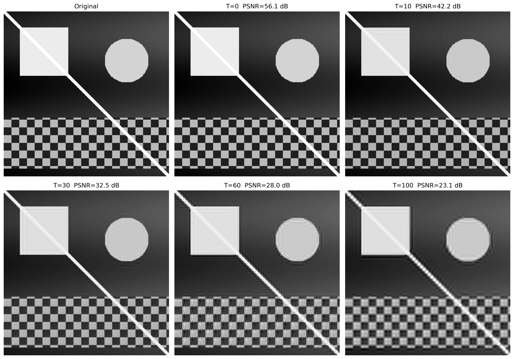
Figura 5.22: Reconstrucción wavelet con umbralización de coeficientes (hard thresholding): a medida que el umbral aumenta, más detalles se ponen a cero, produciendo imágenes progresivamente más suaves. La métrica PSNR cuantifica la pérdida de calidad sobre el patrón sintético.
Síntesis — Fourier vs. Wavelets: ¿cuándo utilizar cada enfoque?
La Tabla 5.5 sintetiza las principales diferencias estructurales y operativas entre la Transformada Discreta de Fourier (DFT) y la Transformada Wavelet Discreta (DWT).
Tabla 5.5: Comparación entre la Transformada Discreta de Fourier (DFT) y la Transformada Wavelet Discreta (DWT), destacando sus principales características y aplicaciones.
Criterio
Fourier (DFT)
Wavelet (DWT)
Funciones de base
Senoides de soporte infinito
Funciones de soporte compacto
Localización espacial
No explícita (global)
Explícita (local)
Filtrado espectral
Excelente para el control fino de frecuencias
Basado en subbandas (escalas)
Compresión de imágenes
Base de la DCT (JPEG tradicional)
Base de la DWT (JPEG 2000)
Análisis multiescala
No
Sí
Eliminación de ruido periódico
Altamente eficiente
Poco indicada
Señales no estacionarias
Limitada
Altamente eficiente
En términos prácticos, la DFT se consolida como la herramienta ideal para el análisis espectral puro, el diseño de filtros selectivos en el dominio de la frecuencia y la atenuación de ruidos periódicos y armónicos. Por otro lado, la DWT sobresale en escenarios que exigen la preservación rigurosa de la localización espacial de las características asociada a su contenido frecuencial, destacándose en la compresión de datos, el análisis multirresolución y el procesamiento de transiciones abruptas. De este modo, ambas transformadas deben entenderse como técnicas perfectamente complementarias, que mapean caminos distintos y específicos para la resolución de problemas en PDI-VC.
NotaAnalogías con Audio: Limitaciones y Precauciones
Al establecer analogías entre el procesamiento de imágenes y el audio, es importante considerar las diferencias fundamentales:
En los sistemas de audio estéreo/multicanal, la fase entre canales es crucial para la percepción de la localización espacial (diferencias interaurales de fase y tiempo).
En los sistemas monoaurales, la fase tiene una influencia perceptual limitada: el oído humano es relativamente insensible a la fase absoluta de componentes sinusoidales aislados.
En las imágenes, la fase de la DFT siempre es fundamental para la localización espacial de las estructuras, independientemente de que se trate de una imagen monocromática o en color.
La analogía entre la fase en audio y la fase en imágenes debe emplearse con cautela, destacando que, aunque ambas transportan información sobre la organización espacial/temporal de la señal, los mecanismos perceptuales son fundamentalmente diferentes.
5.7 Compresión de Imágenes
Mientras que las wavelets establecen la base teórica del estándar JPEG 2000, el estándar JPEG tradicional se basa en la Transformada Discreta de Cosenos (DCT, Discrete Cosine Transform). A pesar de las diferencias estructurales, ambos enfoques comparten el mismo principio fundamental: compactar la energía de la imagen en un número reducido de coeficientes y descartar los componentes de menor relevancia con un impacto visual mínimo.
El objetivo central de la compresión es reducir el volumen de datos necesario para el almacenamiento o transmisión de una imagen. Este proceso es posible gracias a la identificación y eliminación de redundancias estructurales y perceptuales.
5.7.1 Taxonomía de las Redundancias
El desarrollo de algoritmos de compresión se fundamenta en la identificación y eliminación de tres categorías principales de redundancia, sintetizadas en la Tabla 5.6.
Tabla 5.6: Categorías de redundancia en imágenes digitales y sus respectivos mecanismos de explotación.
Tipo
Definición
Enfoque de Explotación
Espacial (interpíxel)
Alta correlación y dependencia estadística entre píxeles vecinos.
DCT, DWT y codificación predictiva.
Espectral (intercanal)
Correlación estadística entre los canales de color de una misma imagen.
Transformaciones de espacio de color (ej: RGB a \(YC_bC_r\)).
Psicovisual
Insensibilidad del sistema visual humano (SVH) a variaciones de alta frecuencia y bajo contraste.
Procesos de cuantización selectiva de coeficientes.
Dependiendo de la preservación de la información original tras el proceso de decodificación, los métodos de compresión se dividen en dos clases fundamentales:
Sin pérdida (lossless): Garantiza una reconstrucción bit a bit idéntica a la imagen original. Se emplea en escenarios donde la integridad de los datos es estrictamente crítica, como en imágenes médicas, diagnósticos por imagen y almacenamiento de documentos textuales.
Con pérdida (lossy): Admite la introducción de una distorsión controlada en la señal a cambio de tasas de compresión sustancialmente más elevadas. Es el enfoque estándar para fotografías de consumo y streaming de vídeo, ecosistemas en los cuales el SVH tolera pequeñas atenuaciones de alta frecuencia sin percepción de degradación de la calidad visual.
5.7.2 Transformada de Cosenos Discreta (DCT-II 2D)
La Transformada de Cosenos Discreta (DCT) constituye la operación central del estándar JPEG. A diferencia de la DFT, que utiliza una base compleja, la DCT se basa en funciones trigonométricas puramente reales. Para un bloque de imagen \(f(x,y)\) de dimensiones \(N \times N\), la DCT-II 2D mapea la señal espacial al dominio de las frecuencias espaciales, generando la matriz de coeficientes \(C(u,v)\) mediante:
donde los factores de normalización ortogonal están dados por \(\alpha(0) = \sqrt{1/N}\) y \(\alpha(k) = \sqrt{2/N}\) para \(k > 0\).
Cada coeficiente \(C(u,v)\) cuantifica la contribución —o “peso”— de una frecuencia espacial específica dentro de ese bloque. El término \(C(0,0)\) se denomina componente DC y representa la intensidad media del bloque (frecuencia nula). Los demás coeficientes, llamados componentes AC (Alternating Current), corresponden a las frecuencias espaciales progresivamente mayores.
5.7.3 Las Funciones de Base de la DCT
Desde una perspectiva geométrica, la Ecuación 5.9 realiza la proyección del bloque de píxeles sobre un conjunto de funciones ortogonales. Para el caso estándar de JPEG (\(N=8\)), el bloque espacial se descompone en una combinación lineal de 64 funciones de base bidimensionales, denotadas por \(B_{u,v}(x,y)\) y generadas por el producto de funciones cosenoidales:
De esta manera, la operación inversa puede interpretarse como la reconstrucción exacta del bloque original mediante la suma ponderada de estas 64 matrices de base, donde cada coeficiente \(C(u,v)\) actúa como el peso analítico de su respectiva componente armónica.
La frecuencia espacial indicada por los índices \((u,v)\) determina el número de ciclos de oscilación a lo largo de las dimensiones horizontales y verticales del bloque. Como se ilustra en la Figura 5.23 —cuyo código aísla cada base aplicando la transformación inversa sobre impulsos unitarios—, estas 64 funciones se organizan en una matriz \(8 \times 8\). La esquina superior izquierda (\(u=0, v=0\)) muestra el patrón uniforme de frecuencia nula (DC), mientras que el avance hacia la derecha (eje \(u\)) o hacia abajo (eje \(v\)) mapea variaciones armónicas progresivamente mayores, representando transiciones rápidas, bordes y texturas en las orientaciones horizontales, verticales y diagonales.
NotaDCT vs DFT: Ventaja de la Compactación de Energía
Tanto la DCT como la DFT mapean un bloque espacial \(N \times N\) en una matriz de coeficientes de la misma dimensión. Sin embargo, para imágenes naturales, la DCT presenta una mayor eficiencia en la compactación de energía en las bajas frecuencias. Esto ocurre porque la DCT asume implícitamente una simetría par de la señal en las fronteras del bloque, lo que equivale a una extensión periódica continua, minimizando el efecto de dispersión espectral (ringing). Como consecuencia, la mayoría de los coeficientes AC decae rápidamente hacia valores cercanos a cero, optimizando el pipeline de compresión sin introducir degradación visual perceptible.
from scipy.fft import dct, idct # línea añadidafig, axes = plt.subplots(8, 8, figsize=(6, 6))fig.subplots_adjust(hspace=0.05, wspace=0.05)for i inrange(8):for j inrange(8): coef = np.zeros((8, 8)); coef[i, j] =1 b = idct(idct(coef.T, norm='ortho').T, norm='ortho') axes[i, j].imshow(b, cmap='gray') axes[i, j].axis('off')plt.suptitle("As 64 Bases da DCT 8x8", y=0.92, fontsize=12, fontweight='bold')plt.show()
Figura 5.23: El Alfabeto Visual del JPEG: Las 64 funciones de base de la DCT-II. El coeficiente DC está en la parte superior izquierda (suave). Al descender y avanzar hacia la derecha, la oscilación espacial aumenta drásticamente.
5.7.4 Concentración de Energía y Reconstrucción Progresiva
Antes de la aplicación de la DCT, los píxeles del bloque de intensidad se trasladan rutinariamente (restando \(128\) para imágenes de 8 bits) con el fin de centrar la señal en torno a cero, eliminando componentes continuas innecesarias. Al calcular la DCT sobre el bloque resultante, la propiedad de compactación de energía se hace evidente: casi la totalidad de la varianza y de la información de la imagen original se concentra en el coeficiente DC (\(C(0,0)\)) y en los primeros armónicos AC de baja frecuencia.
La Figura 5.24 demuestra este fenómeno mediante una reconstrucción progresiva por truncamiento abrupto. En lugar de utilizar los 64 coeficientes, el algoritmo preserva únicamente los \(k\) primeros componentes —seleccionados con base en un barrido que prioriza las bajas frecuencias espaciales— y anula los restantes.
La síntesis inversa (IDCT) realizada con solo una fracción de los coeficientes (como 15% o 30%) ya es capaz de recuperar las estructuras y la iluminación macro del bloque original de píxeles. A medida que los armónicos de frecuencias más altas se reincorporan progresivamente, los detalles finos y las transiciones rápidas se restauran. Este comportamiento valida el principio de la compresión perceptual: las altas frecuencias descartadas poseen poca energía y su ausencia, en condiciones normales, genera un impacto visual secundario en la percepción del observador.
from scipy.fft import dct, idctdef dct2(bloco):"""DCT-II 2D ortogonal (separable)."""return dct(dct(bloco.T, norm='ortho').T, norm='ortho')def idct2(coefs):"""IDCT-II 2D ortogonal."""return idct(idct(coefs.T, norm='ortho').T, norm='ortho')# ── Bloque 8×8 centralizado de la imagen ─────────────────────────────────────────cy, cx = img_gray.shape[0]//2, img_gray.shape[1]//2bloco = img_gray[cy:cy+8, cx:cx+8].astype(np.float64) -128.0C = dct2(bloco)print("Coeficientes DCT del bloque 8×8:")print(np.round(C).astype(int))print(f"\nEnergía DC : {C[0,0]**2:.1f}")print(f"Energía total : {(C**2).sum():.1f}")print(f"Fracción en DC : {C[0,0]**2/ (C**2).sum():.1%} ← concentración de energía")# ── Reconstrucción progresiva ──────────────────────────────────────────────────imgs_rec = [cv2.normalize((bloco+128).astype(np.uint8), None, 0, 255, cv2.NORM_MINMAX)]titles_rec = ["Bloco original\n(8×8 pixels)"]for keep in [1, 4, 10, 20, 40, 64]: C_trunc = np.zeros_like(C) indices =sorted([(u,v) for u inrange(8) for v inrange(8)], key=lambda p: p[0]+p[1])for u, v in indices[:keep]: C_trunc[u, v] = C[u, v] rec = np.clip(idct2(C_trunc) +128, 0, 255).astype(np.uint8) imgs_rec.append(rec) titles_rec.append(f"{keep} coef.\n({keep/64:.0%} do total)")mm.show(imgs_rec, titles=titles_rec, cols=4, figsize=(12, 7))
Figura 5.24: DCT 2D en bloque 8×8: coeficientes y reconstrucción progresiva.
5.7.5 El Pipeline de Compresión JPEG
El estándar JPEG opera dividiendo la imagen en bloques disjuntos de \(8 \times 8\) píxeles, procesados mediante una secuencia de transformaciones espaciales, perceptuales y estadísticas. El pipeline completo de codificación se estructura en seis etapas principales:
La Tabla 5.7 detalla la función analítica y el fundamento perceptual que justifica cada una de estas etapas.
Tabla 5.7: Etapas del pipeline de compresión JPEG y sus respectivos fundamentos de diseño.
Etapa
Operación
Fundamento Perceptual y Estadístico
1
Conversión \(RGB \rightarrow YC_bC_r\)
Separa la luminancia (\(Y\)) de la crominancia (\(C_b, C_r\)). El sistema visual humano (SVH) presenta mayor sensibilidad a variaciones de brillo que de color.
2
Submuestreo de crominancia (ej: 4:2:0)
Reduce la resolución espacial de los canales de color a la mitad, descartando datos redundantes con impacto visual despreciable.
3–4
Centralización y aplicación de la DCT \(8 \times 8\)
Traslada los píxeles al intervalo \([-128, 127]\) y compacta la energía espectral del bloque en los coeficientes de baja frecuencia.
5
Cuantificación lineal selectiva
Divide cada coeficiente \(C(u,v)\) por el elemento correspondiente de la matriz \(Q(u,v)\), aplicando redondeo entero. Constituye la principal fuente de compresión con pérdida.
6
Barrido en zigzag y codificación
Ordena los coeficientes cuantificados para maximizar secuencias nulas consecutivas, optimizando la codificación por longitud de corrida (RLE) y la codificación de Huffman.
La matriz de cuantificación\(Q(u,v)\) es el mecanismo central de control del compromiso entre tasa de compresión y calidad visual. En el algoritmo práctico de la Figura 5.25, el factor de calidad estipulado por el usuario (escala de 1 a 100) se convierte en un escalar que parametriza la severidad de la matriz \(Q\). Valores reducidos de calidad expanden los divisores de \(Q(u,v)\), forzando el truncamiento masivo de los coeficientes AC a cero. Cuando esta eliminación es excesiva, la discontinuidad en las fronteras de los bloques adyacentes no se atenúa en la reconstrucción, generando los denominados artefactos de bloque (blocking artifacts).
La Lógica del Barrido en Zigzag
La eficiencia del codificador entrópico posterior a la cuantificación depende directamente de la ordenación de los datos. Como la DCT concentra la energía vital en el vértice superior izquierdo de la matriz (bajas frecuencias) y empuja los coeficientes nulos hacia las extremidades opuestas, la lectura lineal por filas o columnas fragmentaría las secuencias de ceros.
La ordenación en zigzag soluciona esta limitación al recorrer la matriz diagonalmente en orden creciente de frecuencia espacial. Este mapeo agrupa los coeficientes significativos al inicio del vector y concentra los coeficientes nulos en una única secuencia continua al final del arreglo, permitiendo que el algoritmo RLE codifique grandes bloques de datos de forma compacta y eficiente.
Nota¿Qué es RLE?
RLE (Run-Length Encoding) es una técnica de compresión sin pérdidas que codifica secuencias consecutivas de valores idénticos — especialmente ceros — como un par (recuento, valor). En JPEG, después del barrido en zigzag, los coeficientes cuantificados se organizan de modo que los ceros se concentren al final del vector. El RLE entonces comprime esa larga corrida de ceros con extrema eficiencia, optimizando el almacenamiento y la transmisión de la imagen comprimida.
import numpy as npimport cv2from scipy.fft import dct, idct# ── Carga Segura de la Imagen de la Cámara (skimage) ─────────────────────────try:from skimage import data img_gray = data.camera()exceptImportError:import subprocess subprocess.run(["pip", "install", "scikit-image", "-q"])from skimage import data img_gray = data.camera()# Redimensiona ligeramente a 256x256 para mantener el patrón y velocidad de las pruebas anterioresimg_gray = cv2.resize(img_gray, (256, 256))# ── Tabla de cuantización de luminancia (estándar JPEG) ──────────────────────Q_luma = np.array([ [16,11,10,16,24,40,51,61], [12,12,14,19,26,58,60,55], [14,13,16,24,40,57,69,56], [14,17,22,29,51,87,80,62], [18,22,37,56,68,109,103,77], [24,35,55,64,81,104,113,92], [49,64,78,87,103,121,120,101], [72,92,95,98,112,100,103,99]], dtype=np.float64)def dct2(bloco):"""DCT-II 2D ortogonal (separable)."""return dct(dct(bloco.T, norm='ortho').T, norm='ortho')def idct2(coefs):"""IDCT-II 2D ortogonal."""return idct(idct(coefs.T, norm='ortho').T, norm='ortho')def jpeg_compress_block(bloco, Q_table):"""DCT → cuantización → de-cuantización → IDCT en bloque 8×8.""" C = dct2(bloco.astype(np.float64) -128) Cq = np.round(C / Q_table) * Q_table # cuantiza y de-cuantizareturn np.clip(idct2(Cq) +128, 0, 255)def jpeg_quality_compress(img, qualidade=50):"""JPEG simplificado: comprime imagen completa por bloques 8×8."""if qualidade <50: escala =5000/ qualidadeelse: escala =200-2* qualidade# Corregido de 'scala' a 'escala' Q = np.clip(np.round(Q_luma * escala /100), 1, 255) h, w = img.shape result = np.zeros_like(img, dtype=np.float64)for r inrange(0, h-7, 8):for c inrange(0, w-7, 8): result[r:r+8, c:c+8] = jpeg_compress_block(img[r:r+8, c:c+8], Q)return result.astype(np.uint8)# ── Comparación de factores de calidad ───────────────────────────────────────qualidades = [10, 25, 50, 75, 90]imgs_jpeg = [img_gray]titles_jpeg = ["Original\n(Cameraman)"]for q in qualidades: rec = jpeg_quality_compress(img_gray, qualidade=q) psnr = cv2.PSNR(img_gray, rec) imgs_jpeg.append(rec) titles_jpeg.append(f"Q={q}\nPSNR={psnr:.1f}dB")mm.show(imgs_jpeg, titles=titles_jpeg, cols=3, figsize=(14, 10))
Figura 5.25: Pipeline JPEG simplificado aplicado a la imagen clásica del Cameraman: DCT en bloques 8×8, cuantización con diferentes factores de calidad y reconstrucción vía IDCT. Los artefactos de bloque (blocking artifacts) se vuelven visualmente evidentes en factores de calidad reducidos (\(Q=10\) y \(Q=25\)).
5.7.6 Simulador Interactivo: Cuantización DCT
El simulador de la Figura 5.26 permite explorar el impacto del proceso de cuantización sobre un bloque \(8 \times 8\) extraído de una imagen real, sintetizando en tiempo real los siguientes componentes:
Bloque original y reconstruido: Representación directa de los píxeles en el dominio espacial en escala de grises [0, 255].
Coeficientes DCT: Distribución de la energía mapeada de forma logarítmica en un gradiente cromático, evidenciando la concentración de intensidad en el vértice superior izquierdo (bajas frecuencias).
Coeficientes cuantizados: Exhibición de los valores enteros resultantes de la división por la matriz \(Q(u,v)\), haciendo visualmente explícita la aparición masiva de coeficientes nulos (en tonos oscuros) conforme el factor de calidad se reduce.
Métricas de compresión: Panel de monitoreo que cuantifica el Error Cuadrático Medio (MSE), el número de coeficientes preservados y el volumen de ceros generados para la codificación entrópica.
Figura 5.26: Simulador interactivo de compresión DCT-JPEG: ajuste el factor de calidad y visualice en tiempo real los coeficientes anulados, el bloque reconstruido y el error de cuantización.
5.8 Comparación de Formatos de Imagen
La elección de un formato de almacenamiento digital impacta directamente en el compromiso entre calidad visual, tamaño de archivo y costo computacional de decodificación. Los tres formatos de mayor relevancia para arquitecturas web y sistemas de computación visual son JPEG, PNG y WebP.
5.8.1 Características de los Formatos
La Tabla 5.8 sintetiza las propiedades estructurales de los principales formatos de imagen rasterizados.
Tabla 5.8: Comparación estructural entre los principales formatos de imagen rasterizados.
Característica
JPEG
PNG
WebP
Compresión
Con pérdida
Sin pérdida
Con y sin pérdida.
Transparencia (canal alfa)
No
Sí
Sí.
Soporte de animación
No
Limitado (APNG)
Sí.
Algoritmo base
DCT + Huffman
DEFLATE (LZ77 + Huffman)
VP8 / VP8L.
Mejor para
Fotografía
Gráficos, texto e iconos
Uso universal en entorno Web.
Peor para
Texto y bordes nítidos
Imágenes fotográficas complejas
Compatibilidad heredada.
5.8.2 Métricas de Evaluación de Calidad
Dos métricas objetivas son ampliamente adoptadas para cuantificar la distorsión introducida por procesos de compresión:
Pico de la Relación Señal-Ruido (PSNR, Peak Signal-to-Noise Ratio):\[
\text{PSNR} = 10\,\log_{10}\!\left(\frac{L^2}{\text{MSE}}\right) \quad [\text{dB}]
\tag{5.10}\]
donde \(L = 255\) para imágenes cuantizadas en 8 bits y \(\text{MSE}\) representa el Error Cuadrático Medio (Mean Squared Error). Valores de PSNR superiores a 40 dB indican excelente fidelidad; entre 30 dB y 40 dB representan buena calidad; y valores inferiores a 30 dB corresponden a degradaciones visuales fácilmente perceptibles.
El SSIM evalúa ventanas locales de la imagen basándose en tres componentes complementarios: luminancia (\(\mu_f, \mu_g\)), contraste (\(\sigma_f, \sigma_g\)) y estructura (\(\sigma_{fg}\)), ponderados por constantes de estabilidad \(c_1\) y \(c_2\). El índice varía en el intervalo \([-1, 1]\), donde la unidad representa la identidad perfecta. A diferencia del PSNR, el SSIM considera la organización espacial de los errores, alineándose con la percepción del sistema visual humano (SVH).
NotaPSNR vs SSIM: Aplicación de Métricas Perceptuales
El PSNR posee una formulación matemática simple y un bajo costo computacional; sin embargo, tiende a sobreestimar la calidad en imágenes con distorsiones localizadas o subestimarla en variaciones globales de brillo toleradas por el observador. El SSIM modela con mayor fidelidad la percepción biológica, pero exige un mayor esfuerzo de procesamiento. Para análisis rigurosos de codificadores, se recomienda reportar ambas métricas estadísticas en carácter complementario.
5.8.3 Inspección Visual: Naturaleza de los Artefactos de Compresión
La naturaleza matemática del codificador determina el tipo de degradación introducida en tasas de bits reducidas. Como se ilustra en la Figura 5.27, la compresión agresiva mediante DCT en el estándar JPEG segmenta la imagen en mallas rígidas, generando los artefactos de bloque (blocking artifacts). En contrapartida, los algoritmos basados en codificación predictiva o representaciones sometidas a transformadas espaciales avanzadas (como WebP y JPEG 2000) eliminan las discontinuidades de bloque, pero introducen pérdida de textura fina y desenfoques característicos alrededor de bordes de alto contraste.
import osimport cv2# Garantiza la existencia del directorio y guarda los archivos comprimidosos.makedirs("imagens/comp_test", exist_ok=True)cv2.imwrite("imagens/comp_test/camera_q10.jpg", img_gray, [cv2.IMWRITE_JPEG_QUALITY, 10])cv2.imwrite("imagens/comp_test/camera_q10.webp", img_gray, [cv2.IMWRITE_WEBP_QUALITY, 10])# Extracción de región de interés para visualización de artefactos (Zoom de 4x)zoom_original = cv2.resize(img_gray[120:200, 150:230], (320, 320), interpolation=cv2.INTER_NEAREST)rec_jpeg = cv2.imread("imagens/comp_test/camera_q10.jpg", cv2.IMREAD_GRAYSCALE)zoom_jpeg = cv2.resize(rec_jpeg[120:200, 150:230], (320, 320), interpolation=cv2.INTER_NEAREST)rec_webp = cv2.imread("imagens/comp_test/camera_q10.webp", cv2.IMREAD_GRAYSCALE)zoom_webp = cv2.resize(rec_webp[120:200, 150:230], (320, 320), interpolation=cv2.INTER_NEAREST)mm.show([zoom_original, zoom_jpeg, zoom_webp], titles=["Zoom Original", "JPEG Q=10 (Artefacto de Bloque)", "WebP Q=10 (Suavizado)"], cols=3, figsize=(14, 5))
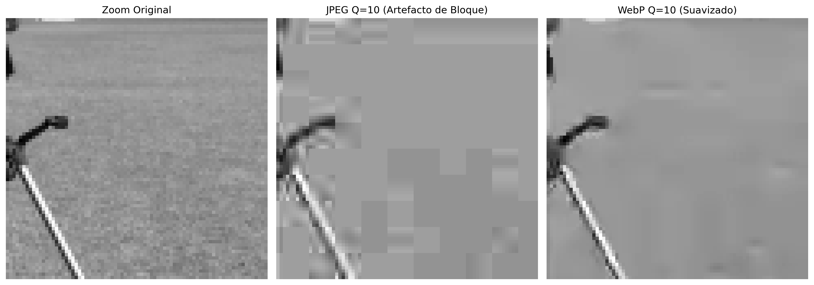
Figura 5.27: Análisis comparativo de artefactos de compresión bajo factor de calidad reducido (\(Q=10\)). A la izquierda, se observa el artefacto de bloque característico de la discretización por DCT en JPEG. A la derecha, se evidencia el efecto de atenuación y suavizado de bordes intrínseco al estándar WebP.
5.8.4 Evaluación Cuantitativa y Espacial de la Compresión
La validación de los algoritmos de compresión con pérdida exige un análisis que correlacione el costo de almacenamiento con la fidelidad de la señal reconstruida. Esta evaluación se realiza de manera complementaria mediante curvas de rendimiento global y mediante el mapeo local de las distorsiones inducidas por los codificadores.
5.8.4.1 Curvas de Tasa-Distorsión
La Figura 5.28 presenta la evaluación empírica del pipeline JPEG y WebP mediante curvas de tasa-distorsión, que monitorean la ganancia de compresión (tamaño del archivo en KB) en función del PSNR. El formato PNG actúa como línea de base ideal (\(\text{PSNR} = \infty\)), ya que su naturaleza lossless impide cualquier degradación, aunque requiere un volumen de datos sustancialmente mayor.
El análisis de las curvas demuestra la superioridad y la eficiencia del estándar WebP sobre el JPEG tradicional: para alcanzar un mismo nivel de fidelidad matemática (como el rango de calidad excelente, donde \(\text{PSNR} > 40\text{ dB}\)), el codificador WebP genera archivos significativamente más pequeños. Este comportamiento refleja el impacto práctico de la evolución de los algoritmos en la optimización de los sistemas de transmisión y almacenamiento digital.
import osimport cv2import matplotlib.pyplot as plt# Garantiza la existencia del directorio de pruebasos.makedirs("imagens/comp_test", exist_ok=True)resultados = []# ── JPEG ──────────────────────────────────────────────────────────────────────for q in [10, 20, 30, 40, 50, 60, 70, 80, 90, 95]: path =f"imagens/comp_test/camera_q{q}.jpg" cv2.imwrite(path, img_gray, [cv2.IMWRITE_JPEG_QUALITY, q]) rec = cv2.imread(path, cv2.IMREAD_GRAYSCALE) resultados.append({"formato": "JPEG", "qualidade": q,"PSNR": cv2.PSNR(img_gray, rec),"KB": os.path.getsize(path)/1024})# ── PNG ───────────────────────────────────────────────────────────────────────path_png ="imagens/comp_test/camera.png"cv2.imwrite(path_png, img_gray, [cv2.IMWRITE_PNG_COMPRESSION, 9])resultados.append({"formato": "PNG", "qualidade": "lossless","PSNR": float('inf'), "KB": os.path.getsize(path_png)/1024})# ── WebP ──────────────────────────────────────────────────────────────────────for q in [50, 75, 90]: path_w =f"imagens/comp_test/camera_q{q}.webp" cv2.imwrite(path_w, img_gray, [cv2.IMWRITE_WEBP_QUALITY, q]) rec_w = cv2.imread(path_w, cv2.IMREAD_GRAYSCALE) resultados.append( {"formato": "WebP", "qualidade": q,"PSNR": cv2.PSUB_VAL if'cv2.PSNR'inglobals() else cv2.PSNR(img_gray, rec_w),"KB": os.path.getsize(path_w)/1024})# ── Generación de la Curva Tasa-Distorsión ────────────────────────────────────jpeg_r = [r for r in resultados if r["formato"]=="JPEG"]webp_r = [r for r in resultados if r["formato"]=="WebP"]png_r = [r for r in resultados if r["formato"]=="PNG"]fig, ax = plt.subplots(figsize=(8, 4.5))ax.plot([r["KB"] for r in jpeg_r], [r["PSNR"] for r in jpeg_r],"o-", label="JPEG", color="#D85A30", lw=2, ms=5)ax.plot([r["KB"] for r in webp_r], [r["PSNR"] for r in webp_r],"s-", label="WebP", color="#534AB7", lw=2, ms=5)ax.axhline(50, color="#1D9E75", lw=2, ls="--", label=f"PNG sem perda ({png_r[0]['KB']:.1f} KB)")ax.axhspan(40, 60, alpha=0.05, color="#1D9E75", label="Qualidade excelente (PSNR>40)")ax.set(xlabel="Tamanho do arquivo (KB)", ylabel="PSNR (dB)", title="Curva Taxa-Distorção: JPEG × WebP × PNG")ax.legend(fontsize=9)ax.grid(True, alpha=0.3)plt.tight_layout()plt.show()print(f"\nTamaño bruto (sin compresión): {img_gray.nbytes/1024:.0f} KB")print(f"\n{'Formato':>8}{'Qual.':>6}{'KB':>7}{'PSNR (dB)':>11}")print("-"*38)for r in resultados: psnr_s =f"{r['PSNR']:>11.2f}"if r['PSNR']!=float('inf') elsef"{'∞ (lossless)':>11}"print(f"{r['formato']:>8}{str(r['qualidade']):>6}{r['KB']:>7.1f}{psnr_s}")
Figura 5.28: Curva tasa-distorsión: PSNR vs tamaño de archivo para JPEG, WebP y PNG aplicada a la imagen del Cameraman.
La imagen Cameraman (\(256 \times 256\) píxeles en escala de grises) ocupa 64 KB en formato bruto (sin compresión). Como referencia, el PNG lossless comprime ese volumen a 36,2 KB — evidenciando que la compresión sin pérdidas ya reduce significativamente el almacenamiento para imágenes con regiones homogéneas. En contrapartida, los formatos con pérdida (JPEG y WebP) alcanzan tamaños aún menores: el JPEG con calidad 95 ocupa 22,3 KB (PSNR ≈ 45 dB), mientras que el WebP con calidad 90 alcanza 12,5 KB con PSNR equivalente, demostrando su superioridad en eficiencia de compresión.
5.8.4.2 Mapeo Espacial de Errores y Correlación Perceptual
Aunque el PSNR ofrece un indicativo numérico rápido, las métricas globales no logran discriminar cómo se distribuye geométricamente la pérdida de información sobre la imagen. La Figura 5.29 soluciona esta limitación al asociar las reconstrucciones en diferentes calidades con sus respectivos mapas de error absoluto y con el SSIM.
Los mapas residuales — obtenidos mediante la diferencia absoluta normalizada entre la imagen original y la comprimida — revelan la firma espacial intrínseca de cada arquitectura de codificación:
En calidades altas (\(Q=95\) a \(Q=75\)): Las distorsiones se concentran predominantemente alrededor de transiciones abruptas de intensidad (bordes), como resultado del reflejo espectral derivado del descarte de altas frecuencias. El índice SSIM permanece cercano a la unidad, atestiguando la integridad de las estructuras originales.
En calidades agresivas (\(Q=50\) a \(Q=25\)): El error adopta una estructura de malla ortogonal regularizada. Este patrón geométrico evidencia la aparición de los artefactos de bloque (blocking artifacts), indicando que la cuantización severa ha corrompido la correlación espacial entre bloques adyacentes de \(8 \times 8\) píxeles.
El SSIM captura esta degradación morfológica de manera mucho más sensible que el PSNR, penalizando la puntuación final a medida que la organización estructural y las texturas finas — a las cuales el sistema visual humano es altamente receptivo — son eliminadas por el codificador.
import osimport numpy as npimport cv2try:from skimage.metrics import structural_similarity as ssimexceptImportError:import subprocess subprocess.run(["pip", "install", "scikit-image", "-q"])from skimage.metrics import structural_similarity as ssim# Garantiza la existencia del directorio de pruebasos.makedirs("imagens/comp_test", exist_ok=True)qualidades_ssim = [25, 50, 75, 95]imgs_ssim = [img_gray]titles_ssim = ["Original"]for q in qualidades_ssim: path =f"imagens/comp_test/camera_ssim_q{q}.jpg"# GRABACIÓN FORZADA: Genera y graba el JPEG con la calidad actual en la ruta correcta img_compactada = jpeg_quality_compress(img_gray, qualidade=q) cv2.imwrite(path, img_compactada)# Lectura segura del archivo recién grabado rec = cv2.imread(path, cv2.IMREAD_GRAYSCALE)if rec isNone: continueif rec.shape != img_gray.shape: rec = cv2.resize(rec, (img_gray.shape[1], img_gray.shape[0])) psnr_v = cv2.PSNR(img_gray, rec) ssim_v, _ = ssim(img_gray, rec, full=True)# Diferencia absoluta normalizada para evidenciar la estructura espacial del error diff_vis = cv2.normalize(np.abs(img_gray.astype(float) - rec.astype(float)),None, 0, 255, cv2.NORM_MINMAX).astype(np.uint8) imgs_ssim += [rec, diff_vis] titles_ssim += [f"Q={q}\nPSNR={psnr_v:.1f}dB | SSIM={ssim_v:.3f}",f"Mapa de erro (Q={q})\n(Bordas e blocagem)"]mm.show(imgs_ssim, titles=titles_ssim, cols=3, figsize=(14, 14))
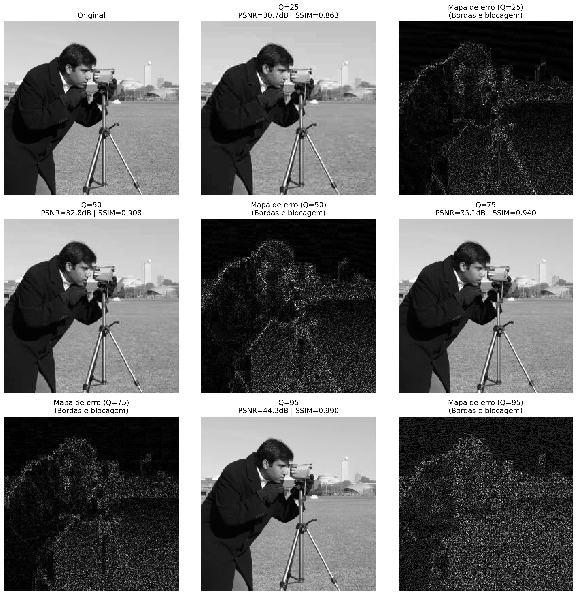
Figura 5.29: Análisis espacial de degradación: imágenes reconstruidas y sus respectivos mapas de error absoluto normalizados para diferentes factores de calidad JPEG.
NotaInterpretando los mapas de error
Los mapas de error presentados fueron normalizados individualmente (cv2.NORM_MINMAX) para maximizar el contraste visual y revelar la estructura espacial de las distorsiones. Esto significa que:
En Q=95, el error absoluto es del orden de 0.5–1.5 niveles de gris (imperceptible visualmente), pero la normalización lo amplifica a blanco y negro para evidenciar su ubicación en bordes y transiciones.
En Q=25, el error absoluto es 10–20 veces mayor (5–15 niveles de gris), pero la normalización también lo lleva al mismo intervalo [0, 255].
Por lo tanto, la intensidad del blanco en los mapas NO es comparable entre diferentes calidades — los mapas sirven únicamente para revelar la firma espacial del error (bordes vs bloques), no su magnitud. La magnitud correcta está dada por los valores de PSNR y SSIM, que muestran claramente que Q=95 tiene un error mucho menor que Q=25.
Síntesis — Compresión JPEG
El proceso de compresión en el estándar JPEG se basa en la aplicación combinada de transformaciones espaciales, perceptuales y estadísticas para reducir las redundancias de una imagen. La Tabla 5.9 resume el papel de cada etapa en el pipeline y su respectivo impacto en la reducción de datos.
Tabla 5.9: Síntesis de las etapas del pipeline de compresión JPEG y sus respectivos impactos.
Etapa
Operación Analítica
Mecanismo de Ganancia / Compresión
Conversión \(YC_bC_r\)
Aislamiento de los canales de luminancia y crominancia.
Modela la percepción del SVH, permitiendo tratar el color y el brillo de forma independiente.
Submuestreo 4:2:0
Reducción de la resolución espacial de los canales de color (\(C_b\) y \(C_r\)).
Elimina aproximadamente el 50% de los datos brutos con un impacto visual mínimo.
DCT \(8 \times 8\)
Mapeo del dominio espacial al dominio de frecuencias espaciales.
Compactación de energía, concentrando la información vital en los primeros coeficientes.
Cuantización Lineal
División entera de los coeficientes por una matriz de ponderación \(Q(u,v)\).
Principal fuente de compresión con pérdida; elimina altas frecuencias imperceptibles.
Codificación Entrópica
Aplicación de algoritmos RLE y codificación de Huffman.
Compresión estadística sin pérdida, optimizada por las largas series de coeficientes nulos.
Artefactos de Degradación Característicos
La aplicación de tasas de compresión excesivamente agresivas (factores de calidad reducidos) introduce distorsiones predecibles en la imagen reconstruida, derivadas de las limitaciones matemáticas del modelo:
Artefactos de bloqueo (blocking artifacts): Discontinuidades geométricas visibles en los límites de los bloques de \(8 \times 8\) píxeles, causadas por la pérdida de correlación espacial tras la cuantización severa de los componentes de CA.
Efecto de dispersión (ringing): Oscilaciones fantasma o distorsiones de “humo” alrededor de bordes nítidos y de alto contraste, provocadas por la eliminación abrupta de armónicos de alta frecuencia necesarios para reconstruir funciones escalón.
Pérdida de textura fina: Atenuación de detalles de alta frecuencia y bajo contraste (como céspedes, tejidos o porosidad), lo que hace que regiones originalmente texturizadas adopten un aspecto excesivamente liso u homogeneizado.
5.9 Aplicación Práctica: Eliminación de Ruido mediante Filtrado Híbrido
Reuniendo las técnicas consolidadas a lo largo de este capítulo, se presenta un pipeline completo de restauración de imágenes que combina el análisis espectral en el dominio de la frecuencia con el filtrado adaptativo en el dominio espacial. El objetivo es atenuar un ruido mixto (compuesto por degradación gaussiana e interferencia periódica) preservando al máximo los detalles estructurales de la imagen original.
El par de métricas estadísticas PSNR y SSIM proporciona una evaluación cualitativa y morfológica complementaria del proceso de restauración:
PSNR: Penaliza uniformemente la desviación cuadrática media píxel a píxel.
SSIM: Evalúa la preservación de estructuras locales perceptualmente relevantes (luminancia, contraste y contornos).
En la práctica, existe un compromiso analítico (trade-off) entre reducción de ruido y preservación de detalles: los filtros espaciales excesivamente agresivos atenúan bien el ruido de alta frecuencia, pero degradan texturas finas y suavizan bordes nítidos — lo que reduce simultáneamente tanto el PSNR como el SSIM en relación con la imagen original. El desafío del diseño de filtros es encontrar el punto de equilibrio que maximice ambas métricas, garantizando una restauración fiel y visualmente agradable.
5.9.1 Análisis de Rendimiento y Conclusión del Capítulo
Los resultados numéricos y visuales generados por la Figura 5.30 demuestran la relevancia práctica de asociar diferentes dominios de procesamiento. La inserción simultánea de ruido periódico y estocástico corrompe las propiedades morfológicas de la señal, reduciendo severamente los índices de similitud y la relación señal-ruido de la imagen de referencia.
El aislamiento y la supresión de los picos armónicos en el dominio de la frecuencia mediante la máscara notch eliminan las franjas de interferencia senoidales dispersas sobre el espacio bidimensional. Como se evidencia en los datos impresos de la Figura 5.30, este filtrado quirúrgico promueve un salto inmediato y sustancial en la métrica PSNR. No obstante, el ruido Gaussiano de alta frecuencia permanece activo de forma homogénea en el espectro, lo que exige un enfoque complementario.
La restauración final se consolida en el dominio espacial con la introducción del filtro bilateral. A diferencia de los operadores de paso bajo convencionales (como el Gaussiano o el de media), que suavizarían indiscriminadamente el ruido y los contornos estructurales, el filtrado bilateral calcula pesos ponderados por la proximidad geométrica y por la diferencia de intensidad radiométrica. Este comportamiento adaptativo atenúa las fluctuaciones estocásticas remanentes en las regiones de transición suave y preserva la nitidez de los bordes espaciales.
La convergencia de ambos enfoques resulta en una mejora sustancial y simultánea del PSNR y del SSIM en relación con la imagen ruidosa — aunque los valores finales permanecen inferiores a los de la imagen original (PSNR = \(\infty\), SSIM = 1,0), debido a la pérdida inevitable de información espectral y de textura durante los procesos de filtrado. La atenuación suave (gaussiana) de los picos en el espectro evita los artefactos de ringing, mientras que el filtro bilateral elimina el ruido estocástico residual sin comprometer la nitidez de los bordes. Los resultados confirman la eficacia y la complementariedad práctica de las herramientas de análisis de frecuencia presentadas en este capítulo, demostrando que el filtrado híbrido (frecuencia + espacial) es superior a cualquier enfoque aislado para la restauración de imágenes degradadas por ruido mixto.
Figura 5.30: Pipeline completo de eliminación de ruido mixto: (1) adición de ruido gaussiano y periódico; (2) identificación de picos de interferencia en el espectro de frecuencias; (3) aplicación de máscara notch con atenuación gaussiana suave; (4) post-procesamiento mediante filtro bilateral para la eliminación del ruido estocástico residual.
5.10 Resumen del Capítulo
La transición del dominio espacial al dominio de la frecuencia revela la distribución espectral de energía de la imagen, estableciendo la base analítica para el filtrado avanzado, la restauración y la compresión de datos. La articulación estructural de estos conceptos se sintetiza en el mapa conceptual de la Figura 5.31.
Figura 5.31: Mapa conceptual de las transformaciones y propiedades en el dominio de la frecuencia.
Fundamentos Esenciales
DFT y Percepción Visual: El espectro descompone la imagen en componentes armónicas. La fase retiene la inteligibilidad geométrica de la escena y la localización de contornos, mientras que la magnitud dicta la distribución de contraste y las amplitudes globales.
Eficiencia Algorítmica: El Teorema de la Convolución hace viable el procesamiento de máscaras de gran escala en el dominio de la frecuencia mediante FFT, reduciendo la complejidad computacional asintótica de \(O(N^2 K^2)\) en el espacio a \(O(N^2 \log N)\).
Fenómeno de Ringing: Los cortes abruptos en el espectro (Filtros Ideales) generan oscilaciones espaciales no deseadas (fenómeno de Gibbs). La atenuación suave mediante filtros de Butterworth o Gaussianos elimina estas discontinuidades.
Análisis Multirresolución mediante Wavelets: Superando el carácter puramente global de Fourier, la DWT captura la frecuencia y la localización espacial simultáneamente, fundamentando el estándar JPEG 2000 y subsidiando representaciones jerárquicas análogas a las extracciones de características en Redes Neuronales Convolucionales (CNNs).
Compresión Perceptual (DCT): El pipeline JPEG explora las limitaciones de contraste del sistema visual humano en altas frecuencias espaciales. La DCT aísla la energía de bloques \(8 \times 8\), permitiendo que la cuantización descarte coeficientes AC de detalles finos sin perjuicio perceptual severo.
Próximos Pasos: El Capítulo 6 inaugura la Parte II de la obra, aplicando las herramientas de procesamiento de imágenes en la resolución de problemas reales de inspección industrial. Se explorarán técnicas de segmentación y análisis de formas para la detección automática de fallas en líneas de producción — desde la identificación de defectos superficiales en piezas hasta la lectura QRCode en pruebas, consolidando el puente entre la teoría presentada en la Parte I y las demandas prácticas de la visión computacional.
5.11 🤖 Uso de Gemini Notebook como Tutor Complementario
En esta edición, se incentiva el uso de la plataforma Gemini Notebook como herramienta complementaria de aprendizaje — no como sustituta de la lectura atenta, de la resolución de ejercicios o de la experimentación práctica. Basado en arquitecturas de inteligencia artificial, el sistema utiliza exclusivamente el material didáctico y los documentos proporcionados por el autor como base de conocimiento, asegurando que las respuestas generadas estén conceptualmente alineadas con el contenido programático y con el enfoque pedagógico adoptado a lo largo de esta obra.
El proyecto de este capítulo en Gemini Notebook fue construido únicamente con el texto en portugués y los ejemplos de código en Python. Si estás estudiando con la edición en inglés o francés, o siguiendo la ruta en C++, las respuestas del tutor pueden no corresponder exactamente con la versión que estás leyendo.
Directrices sobre el Contenido Generado por Inteligencia Artificial
Aunque las herramientas de inteligencia artificial constituyen aliados eficientes en el proceso de aprendizaje y revisión, el contenido generado está sujeto a inconsistencias o imprecisiones técnicas. Por ello, es indispensable la consulta sistemática de libros de texto, artículos científicos y fuentes académicas indexadas para la validación rigurosa de la información. Se recomienda encarecidamente la ejecución y la modificación de los ejemplos prácticos en Python proporcionados en este capítulo como método primario de verificación experimental de los resultados.
5.12 Lista de Ejercicios
(10%) Implementación Directa de la DFT 2D: Implemente analíticamente la Transformada Discreta de Fourier 2D (DFT) sin la ayuda de funciones nativas de bibliotecas (como np.fft.fft2), utilizando estrictamente la formulación matemática definida en la Ecuación 5.1 para una matriz de dimensiones \(16 \times 16\). Realice la validación numérica comparando los coeficientes generados con los resultados de la función np.fft.fft2, asegurándose de que la desviación absoluta máxima sea inferior a \(10^{-8}\). Mida los tiempos de ejecución de ambos métodos y presente una justificación teórica para la disparidad observada en términos de complejidad asintótica.
(15%) Supresión de Ruido Periódico: Agregue interferencias sinusoidales con frecuencias espaciales \((u_0, v_0) \in \{(5,10), (20,5), (30,30)\}\) a la imagen de prueba del Cameraman. Para cada escenario de degradación, diseñe una máscara de filtrado notch específica en el dominio de la frecuencia para aislar y atenuar los picos armónicos no deseados. Evalúe cuantitativamente la eficacia del proceso de restauración mediante el cálculo de las métricas de PSNR y SSIM. Discuta analíticamente el compromiso (trade-off) entre la atenuación del ruido sinusoidal y la indeseada atenuación de características estructurales legítimas de la imagen.
(15%) Análisis Comparativo de Operadores Pasa-Bajas: Realice un estudio comparativo entre los filtros pasa-bajas Ideal, Gaussiano y Butterworth (con órdenes armónicas \(n = 1, 2, 4\)), parametrizados con frecuencias de corte \(D_0 = 20, 40, 60\) píxeles. Para cada combinación estructural, calcule los índices PSNR y SSIM de la imagen resultante frente a la señal original de referencia. Organice los datos cuantitativos en una tabla estructurada y grafique las curvas unidimensionales de las funciones de transferencia correspondientes a lo largo del perfil horizontal \(H(u, 0)\).
(15%) Banco de Filtros Multirresolución de Haar: Desarrolle un script para ejecutar manualmente la descomposición wavelet discreta 2D de primer nivel utilizando la familia Haar. El algoritmo debe calcular los coeficientes de los filtros correspondientes pasa-bajas (\(h\)) y pasa-altas (\(g\)), aplicándolos de forma separable sobre las filas y columnas de la matriz, seguidos por la operación de diezmado (submuestreo espacial por un factor de 2). Valide numéricamente la exactitud de su implementación contrastando las subbandas obtenidas con la salida de la función pywt.dwt2(img, 'haar').
(15%) Compresión Dispersa por Umbralización Wavelet: Aplique la técnica de filtrado por umbralización abrupta (hard thresholding) sobre los coeficientes de detalle de la descomposición wavelet, adoptando los umbrales numéricos \(T \in \{5, 10, 20, 40, 80\}\) para las familias Haar, Daubechies (db4) y Symlets (sym4). Después de realizar el proceso de síntesis mediante la transformada inversa (pywt.waverec2), calcule los valores de PSNR y SSIM de cada imagen reconstruida. Identifique y justifique qué combinación de familia wavelet y umbral \(T\) maximiza la similitud estructural.
(15%) Construcción de Codificador JPEG Simplificado: Implemente el flujo completo de compresión de datos simulando el estándar JPEG. El flujo debe abarcar: conversión espacial \(RGB \rightarrow YC_bC_r\), submuestreo cromático en la proporción 4:2:0, segmentación de la luminancia en bloques disjuntos de \(8 \times 8\) píxeles, aplicación de la DCT-II 2D ortogonal y cuantización lineal basada en la matriz normalizada de luminancia escalada por factores de calidad deseados. Realice la decodificación inversa y compare cuantitativamente las reconstrucciones con los archivos generados por la función cv2.imencode para los factores de calidad de 20, 50 y 80.
(15%) Análisis Perceptual en Contenidos Heterogéneos: Desarrolle una imagen sintética compuesta por tres regiones distintas y de características espectrales contrastantes: una textura fotográfica compleja (representando altas frecuencias estocásticas), un área de texto vectorizado con bordes nítidos (representando transiciones escalón puras) y un gradiente lineal continuo (representando bajas frecuencias homogéneas). Someta esta imagen mixta a los procesos de compresión bajo los formatos JPEG, PNG y WebP. Evalúe e interprete los resultados correlacionando el tamaño final del archivo en disco con las métricas PSNR y SSIM obtenidas, justificando qué formato exhibe el mejor desempeño para señales de naturaleza heterogénea y por qué ocurre esa ventaja en términos de compactación de energía y preservación perceptual.
Referencias del Capítulo
La fundamentación teórica y el desarrollo analítico de los conceptos tratados en este capítulo se basan en las siguientes obras de referencia:
Gonzalez (2018) — Formulaciones clásicas de Transformadas Discretas de Fourier 2D (DFT), diseño de filtros analíticos en el dominio de la frecuencia, Transformada Discreta de Cosenos (DCT) y principios fundamentales de sistemas de compresión de imágenes.
Oppenheim (2010) — Teoría formal de señales y sistemas aplicados en el dominio discreto, cubriendo las propiedades matemáticas de la DFT y el modelado analítico del Teorema de la Convolución.
Mallat (1999) — Fundamentación matemática de la teoría de wavelets, formalización del análisis multirresolución (MRA) y arquitectura de bancos de filtros diádicos.
Wallace (1991) — Especificación original y aspectos de ingeniería del estándar de compresión ISO/IEC JPEG, con énfasis en los criterios psicovisuales para el diseño de matrices de cuantización DCT.
Szeliski (2022) — Modelado computacional y caracterización de métricas modernas de fidelidad y calidad perceptual (PSNR y SSIM), así como el análisis comparativo de formatos de imagen rasterizados de alto rendimiento.
5.13 💻 Parte Práctica con Ejercicios de Programación
La presente lista de ejercicios de programación (EP) consolida las formulaciones teóricas presentadas a lo largo del Capítulo 5 — Transformadas y Compresión — mediante una ruta práctica aplicada. Los ejercicios se estructuran a partir de matrices de dimensiones reducidas, lo que permite la validación analítica y la inspección manual de cada coeficiente, manteniendo la consistencia metodológica adoptada en los capítulos anteriores.
El encadenamiento de los ejercicios reproduce rigurosamente el flujo conceptual del capítulo: se comienza con la implementación explícita de la Transformada Discreta de Fourier (DFT) a partir de su definición matemática fundamental; se avanza hacia el diseño de filtros pasa-baja y máscaras notch en el dominio de la frecuencia; se aplica la cuantización de coeficientes (núcleo de la compresión con pérdida); y se concluye con la integración de estas etapas en la construcción de un pipeline de compresión JPEG simplificado y en el análisis perceptual de formatos de imagen.
ImportanteDirectrices para la Resolución de los Ejercicios de Programación
En todos los ejercicios de este capítulo, las coordenadas del centro del espectro (origen de las frecuencias espaciales tras la aplicación del desplazamiento fftshift) deben determinarse mediante división entera. Para una matriz con \(L\) filas y \(C\) columnas, la componente de frecuencia nula se localiza en la posición:
Esta convención es rigurosamente idéntica a la adoptada por la función np.fft.fftshift. Además, en todas las etapas que requieran discretización o redondeo numérico (ya sea en la cuantización de coeficientes AC o en la reconstrucción final de píxeles), debe emplearse el redondeo estándar al entero más cercano (round half away from zero), mitigando ambigüedades en valores con fracción exactamente igual a \(0.5\).
🎯 Objetivo de este Cuaderno
El cuaderno permite desarrollar, validar, organizar y probar soluciones de Ejercicios de Programación (EPs) en entornos interactivos, como Colab, con los mismos casos de prueba de Moodle, copiándolos allí solo en el momento de registrar la nota oficial.
Download
Descargue morph.py y testsuite.py ejecutando la celda a continuación:
Para evaluar las pruebas, ejecuta TestSuite("EP05_01.extensión").run() en una nueva celda, reemplazando la extensión por la del lenguaje utilizado (.py, .java, .c, .cpp, .js o .r). El sistema descarga los casos de prueba de GitHub, ejecuta el programa y calcula la nota automáticamente.
Para probar código Python directamente, sin guardar archivo, usa run_code(codigo) pasando el código como cadena en una variable codigo:
codigo ="""from morph import mm# ... tu código aquí ..."""TestSuite("EP05_01").run_code(codigo)
5.13.1 EP05_01 🟢 Filtro Pasa-Bajas Ideal por Distancia en el Espectro
En un escáner de documentos antiguo, el sensor capta papel arrugado y textura de fibra junto con el texto — ruido de alta frecuencia que “contamina” el espectro en los bordes. El técnico de mantenimiento no tiene acceso a la imagen original, solo al espectro de magnitud ya calculado por el software del escáner. Su trabajo es simple y quirúrgico: mantener únicamente el círculo central de bajas frecuencias (la estructura global del documento) y borrar todo lo que esté fuera del radio \(D_0\), eliminando la textura fina sin siquiera tocar la imagen espacial.
Este es el Filtro Pasa-Bajas Ideal (LPFI): la operación espectral más directa del capítulo, pero también la que mejor revela la anatomía de un espectro centrado.
5.13.1.1 📋 Directrices de Implementación
Dimensiones: Leer los enteros \(L\) (filas) y \(C\) (columnas) del espectro de magnitud — ya proporcionado centrado (equivalente a la salida de np.fft.fftshift).
Frecuencia de corte: Leer el entero \(D_0\).
Datos: Leer los valores enteros de la matriz de magnitud, fila por fila.
Centro del espectro: Calcular \((c_y, c_x) = (L \mathbin{//} 2,\; C \mathbin{//} 2)\).
Distancia: Para cada posición \((u,v)\), calcular \[
D(u,v) = \sqrt{(u-c_y)^2 + (v-c_x)^2}
\]
Filtrado: El valor de salida es \(\text{mag}'(u,v) = \text{mag}(u,v) \cdot H(u,v)\).
Salida: Mostrar la matriz filtrada con dimensiones \(L \times C\).
5.13.1.2 📌 Restricciones Computacionales
Comparación no estricta: el criterio usa \(D(u,v) \le D_0\) (la frontera pertenece al filtro, es decir, se mantiene).
Tipo: todos los valores de entrada y salida son enteros; la distancia se calcula en punto flotante solo internamente.
Sin redondeo de magnitud: como la entrada ya es entera y la máscara es binaria (0 o 1), la salida nunca necesita redondeo.
5.13.1.3 🧠 Fundamentación Teórica
Región
Distancia al centro
Efecto del filtro
Centro (\(D \le D_0\))
Bajas frecuencias
Preservadas — estructura global mantenida
Bordes (\(D > D_0\))
Altas frecuencias
Puestas a cero — textura y ruido eliminados
\(D_0\) pequeño
—
Imagen reconstruida quedaría muy borrosa
\(D_0\) grande
—
Poca filtración; casi toda la energía preservada
5.13.1.4 📦 Especificación de Entrada y Salida (VPL)
Entrada:
Línea 1: Entero \(L\).
Línea 2: Entero \(C\).
Línea 3: Entero \(D_0\).
Líneas siguientes: Elementos enteros de la matriz de magnitud (centrada).
Salida:
Matriz filtrada en \(L\) filas y \(C\) columnas, separados por espacio.
5.13.1.5 📌 Ejemplos
Entrada
Salida
Observación
3
3
1
10 20 30
40 50 60
70 80 90
0 20 0
40 50 60
0 80 0
Centro \((1,1)\). Las esquinas tienen \(D=\sqrt{2}\approx1.41 > 1\), por lo que se ponen a cero; los vecinos ortogonales tienen \(D=1 \le 1\) y se mantienen.
1
3
0
5 9 7
0 9 0
\(L=1, C=3\): centro en \((0,1)\). Solo la propia posición central (\(D=0\)) sobrevive a \(D_0=0\).
Una cámara de inspección industrial captura imágenes de placas de circuito, pero la fuente de alimentación de la línea de producción introduce una interferencia eléctrica periódica — un patrón de franjas casi imperceptible a simple vista, pero que aparece en el espectro de Fourier como pares de picos brillantes simétricamente posicionados alrededor del centro. El equipo de visión por computadora no puede reprocesar la captura: necesita localizar y borrar quirúrgicamente esos pares de picos en el espectro, preservando todo el resto de la información útil de la imagen.
Ese es el papel del filtro rechaza-banda notch: a diferencia del pasa-bajas (que afecta una región continua), ataca puntos específicos y sus simétricos, dejando el resto del espectro intacto.
5.13.2.1 📋 Directrices de Implementación
Dimensiones: Leer los enteros \(L\) (filas) y \(C\) (columnas) del espectro de magnitud centrado.
Datos: Leer los valores enteros de la matriz de magnitud, fila por fila.
Picos: Leer el entero \(K\) (cantidad de pares de picos a eliminar).
Para cada uno de los \(K\) picos: leer tres enteros \(\Delta v\), \(\Delta u\), \(r\) — desplazamiento vertical, desplazamiento horizontal y radio del notch.
Centro del espectro:\((c_y, c_x) = (L \mathbin{//} 2,\; C \mathbin{//} 2)\).
Supresión simétrica: para cada pico, poner a cero todas las posiciones \((u,v)\) tales que la distancia al punto \((c_y+\Delta v,\, c_x+\Delta u)\) sea \(\le r\), y también todas las posiciones con distancia \(\le r\) al punto simétrico \((c_y-\Delta v,\, c_x-\Delta u)\).
Salida: Mostrar la matriz resultante con dimensiones \(L \times C\).
5.13.2.2 📌 Restricciones Computacionales
Simetría obligatoria: cada pico informado genera dos discos puestos a cero (el punto y su simétrico respecto al centro) — olvidar el simétrico es el error más común.
Superposición: si dos discos se superponen, la posición permanece en cero (no hay “suma” ni restauración).
Comparación no estricta: una posición se pone a cero si \(\text{distancia} \le r\).
Orden de lectura: los \(K\) picos deben procesarse en el orden en que aparecen en la entrada, pero el resultado final no depende del orden (las operaciones de poner a cero son conmutativas).
5.13.2.3 🧠 Fundamentación Teórica
Concepto
Papel en el filtro notch
Pico en \((\Delta v, \Delta u)\)
Frecuencia de la interferencia periódica detectada visualmente en el espectro
Punto simétrico \((-\Delta v,-\Delta u)\)
Toda DFT de señal real es hermítica: los picos siempre aparecen en pares simétricos al centro
Radio \(r\)
Controla la “anchura” del rechazo — \(r\) grande elimina más energía alrededor del pico, pero también información útil
5.13.2.4 📦 Especificación de Entrada y Salida (VPL)
Entrada:
Línea 1: Entero \(L\).
Línea 2: Entero \(C\).
Líneas siguientes: Elementos enteros de la matriz de magnitud (centrada), \(L\) filas.
Siguiente línea: Entero \(K\).
\(K\) líneas siguientes: tres enteros \(\Delta v\), \(\Delta u\), \(r\) (separados por espacios).
Salida:
Matriz resultante en \(L\) filas y \(C\) columnas, separadas por espacios.
Centro \((c_y, c_x) = (2, 2)\). El pico informado \((\Delta v, \Delta u) = (1, 1)\) genera el punto \((3, 3)\) (valor 19) y su simétrico \((1, 1)\) (valor 7), ambos puestos a cero con \(r=0\) (solo los puntos exactos).
🎮 Simulador EP05_02: Filtro NotchPar Simétrico
1
1
0
Mueve Δv e Δu para elegir el pico — observa que el par simétrico también se filtra.
Espectro 5×5 (Rojo = Eliminado por el Filtro)
–
Figura 5.33: Simulador EP05_02: Filtro Notch
%%writefile EP05_02.py# Código Python
Writing EP05_02.py
TestSuite("EP05_02.py").run()
📥 Intentando: https://raw.githubusercontent.com/fzampirolli/pdi-vc/master/all/cap05/casos/EP05_02.cases
✅ Descargado con éxito
📋 5 caso(s) cargado(s) de casos/EP05_02.cases
🔍 Probando Python: EP05_02.py
⚠️ EP05_02.py: archivo vacío (menos de 3 líneas). Pruebas omitidas.
5.13.3 EP05_03 🟠 Cuantización DCT: la Verdadera Fuente de Compresión
Una aplicación de galería de fotos necesita reducir el tamaño de miles de imágenes antes de hacer upload a la nube, sin recodificar todo desde cero. El ingeniero responsable ya tiene los coeficientes DCT de cada bloque \(4\times4\) calculados (la etapa costosa computacionalmente ya se ha realizado) — solo falta aplicar la tabla de cuantización, la etapa que realmente descarta información y genera compresión. Los coeficientes de alta frecuencia, menos perceptibles al ojo humano, reciben divisores grandes y tienden a convertirse en cero; los coeficientes de baja frecuencia, más perceptibles, reciben divisores pequeños y sobreviven casi intactos.
Vas a implementar exactamente esta etapa: cuantizar y descuantizar (dividir, redondear, multiplicar de vuelta) — el corazón de la compresión lossy del JPEG.
5.13.3.1 📋 Directrices de Implementación
Dimensión del bloque: Leer el entero \(N\) (bloque \(N \times N\)).
Coeficientes: Leer la matriz \(C\) de coeficientes DCT, \(N\) filas con \(N\) enteros cada una (pueden ser negativos).
Tabla de cuantización: Leer la matriz \(Q\), \(N\) filas con \(N\) enteros positivos cada una.
Cuantización: Para cada posición \((u,v)\), calcular el índice cuantizado \[
\tilde{C}(u,v) = \text{round}\!\left(\frac{C(u,v)}{Q(u,v)}\right)
\] usando redondeo estándar al entero más cercano (los valores intermedios .5 nunca ocurren en los casos de prueba).
Salida: Mostrar la matriz reconstruida \(C'\), \(N \times N\), enteros.
5.13.3.2 📌 Restricciones Computacionales
Round-trip completo: la salida es el coeficiente reconstruido (\(\tilde{C} \times Q\)), no el índice cuantizado aislado.
División en punto flotante: la división \(C(u,v)/Q(u,v)\) debe realizarse en punto flotante antes del redondeo — la división entera truncada producirá un resultado incorrecto.
Signo preservado: los coeficientes negativos mantienen el signo después de la cuantización y la reconstrucción.
\(Q(u,v) > 0\) siempre: no hay necesidad de tratar la división por cero.
5.13.3.3 🧠 Fundamentación Teórica
Coeficiente
Frecuencia
Valor típico de \(Q\)
Efecto de la cuantización
\(C(0,0)\)
DC (promedio del bloque)
Pequeño
Casi siempre sobrevive — domina la energía
\(C(u,v)\) bajo \(u+v\)
Baja frecuencia
Pequeño/medio
Parcialmente preservado
\(C(u,v)\) alto \(u+v\)
Alta frecuencia
Grande
Frecuentemente se convierte en cero — fuente de la compresión
5.13.3.4 📦 Especificación de Entrada y Salida (VPL)
Entrada:
Línea 1: Entero \(N\).
\(N\) líneas siguientes: matriz \(C\) (coeficientes DCT, enteros, pueden ser negativos).
\(N\) líneas siguientes: matriz \(Q\) (tabla de cuantización, enteros positivos).
Salida:
Matriz reconstruida \(C'\), \(N \times N\), enteros separados por espacio.
\(C(0,0)=50/2=25 \to 25\times2=50\) (preservado). \(C(0,2)=-5/7\approx-0.71\to-1\to-1\times7=-7\). Ya \(C(1,1)=-3/7\approx-0.43\to0\): anulado por la cuantización — la mayor parte del bloque se convierte en cero, ilustrando la compactación de energía en la esquina superior izquierda.
Ajuste la escala de Q y vea cuántos coeficientes sobreviven (no cero) tras el round-trip.
Coeficientes DCT (C)
Reconstruido (round(C / Q) · Q)
–
Figura 5.34: Simulador EP05_03: Cuantización DCT (round-trip)
%%writefile EP05_03.py# Código Python
Writing EP05_03.py
TestSuite("EP05_03.py").run()
📥 Intentando: https://raw.githubusercontent.com/fzampirolli/pdi-vc/master/all/cap05/casos/EP05_03.cases
✅ Descargado con éxito
📋 5 caso(s) cargado(s) de casos/EP05_03.cases
🔍 Probando Python: EP05_03.py
⚠️ EP05_03.py: archivo vacío (menos de 3 líneas). Pruebas omitidas.
5.13.4 EP05_04 🔴 Implementando la DFT 2D a partir de la definición
Un laboratorio de investigación en astronomía computacional recibió, de una misión antigua, un pequeño sensor experimental cuyos datos brutos no pueden ser procesados por bibliotecas modernas de FFT — el entorno de validación está aislado y solo permite operaciones aritméticas básicas. El equipo necesita reimplementar la Transformada de Fourier Discreta 2D a partir de la propia definición matemática, célula por célula, para después comparar bit a bit con np.fft.fft2 en otro entorno.
Este es el ejercicio más conceptual de la lista: no hay atajos. Vas a implementar el doble sumatorio de la Ecuación 5.1 directamente, evidenciando por qué existe la FFT — y el costo computacional que evita.
5.13.4.1 📋 Directrices de implementación
Dimensiones: Leer los enteros \(M\) (filas) y \(N\) (columnas) de la imagen \(f(x,y)\).
Datos: Leer los valores enteros de \(f(x,y)\), fila a fila.
DFT 2D: Para cada par de frecuencias \((u,v)\) con \(u=0,\ldots,M-1\) y \(v=0,\ldots,N-1\), calcular \[
F(u,v) = \sum_{x=0}^{M-1}\sum_{y=0}^{N-1} f(x,y)\, e^{-j2\pi\left(\frac{ux}{M}+\frac{vy}{N}\right)}
\] usando la identidad de Euler \(e^{-j\theta} = \cos(\theta) - j\sin(\theta)\) para separar parte real e imaginaria — no se debe utilizar ninguna función de FFT predefinida.
Magnitud: Calcular \(|F(u,v)| = \sqrt{\text{Re}(F)^2 + \text{Im}(F)^2}\) y redondear al entero más cercano.
Salida: Mostrar la matriz de magnitudes redondeadas, \(M \times N\), en el mismo orden (sin fftshift — el DC permanece en \((0,0)\)).
5.13.4.2 📌 Restricciones computacionales
Prohibido usar bibliotecas de FFT: la implementación debe calcular los sumatorios dobles explícitamente (bucles anidados), aunque sea más lenta.
Sin fftshift: la salida mantiene la convención cruda de la DFT, con el componente DC en \(F(0,0)\) (esquina superior izquierda).
Redondeo: la magnitud final debe redondearse al entero más cercano; en los casos de prueba no hay ambigüedad .5.
Precisión: pequeños errores de punto flotante (del orden de \(10^{-6}\)) antes del redondeo son esperados y no afectan al resultado entero final.
5.13.4.3 🧠 Fundamentación teórica
Elemento
Significado
\(F(0,0)\)
Componente DC — suma de todos los píxeles, \(F(0,0) = \sum f(x,y)\)
Parte real \(\text{Re}(F)\)
Proyección de la señal sobre cosenos
Parte imaginaria \(\text{Im}(F)\)
Proyección de la señal sobre senos
Complejidad de esta implementación
\(\mathcal{O}((MN)^2)\) — por eso la FFT, con \(\mathcal{O}(MN\log(MN))\), resulta indispensable en imágenes reales
5.13.4.4 📦 Especificación de entrada y salida (VPL)
Entrada:
Línea 1: Entero \(M\).
Línea 2: Entero \(N\).
Líneas siguientes: Elementos enteros de \(f(x,y)\), \(M\) líneas.
Salida:
Matriz de magnitudes \(|F(u,v)|\) redondeadas, \(M \times N\), separadas por espacios.
Haz clic en las celdas de f(x,y) para cambiar los valores (incrementa +1; Shift + clic decrementa -1) y observa |F(u,v)| recalculado en vivo.
f(x,y) — Dominio Espacial
|F(u,v)| — Magnitud (Sin Shift)
–
Figura 5.35: Simulador EP05_04: DFT 2D manual
%%writefile EP05_04.py# Código Python
Writing EP05_04.py
TestSuite("EP05_04.py").run()
📥 Intentando: https://raw.githubusercontent.com/fzampirolli/pdi-vc/master/all/cap05/casos/EP05_04.cases
✅ Descargado con éxito
📋 5 caso(s) cargado(s) de casos/EP05_04.cases
🔍 Probando Python: EP05_04.py
⚠️ EP05_04.py: archivo vacío (menos de 3 líneas). Pruebas omitidas.
5.13.5 EP05_05 🏆 Pipeline JPEG Completo: DCT, Cuantización y Reconstrucción
Usted ha sido contratado para crear, desde cero, un códec JPEG didáctico en un entorno embebido, sin ninguna biblioteca de imágenes disponible — solo operaciones matemáticas básicas. El cliente quiere entender exactamente dónde se pierde la calidad y dónde se recupera, bloque por bloque. Este es el desafío final del capítulo: integrar todo lo estudiado — la DCT-II ortonormal, la cuantización perceptual y la reconstrucción vía IDCT — en un único pipeline de extremo a extremo, procesando un bloque \(N \times N\) desde el inicio hasta el final, exactamente como el estándar JPEG lo hace internamente, \(8\times8\) píxeles a la vez.
5.13.5.1 📋 Directrices de Implementación
Dimensión del bloque: Leer el entero \(N\).
Bloque original: Leer la matriz de píxeles \(f(x,y)\), \(N\) líneas con \(N\) enteros en \([0,255]\).
Tabla de cuantización: Leer la matriz \(Q\), \(N \times N\) enteros positivos.
Centralización: Restar 128 de cada píxel: \(g(x,y) = f(x,y) - 128\).
DCT-II 2D ortonormal: Calcular \[
C(u,v) = \alpha(u)\,\alpha(v)\sum_{x=0}^{N-1}\sum_{y=0}^{N-1} g(x,y)\,\cos\!\left[\frac{\pi(2x+1)u}{2N}\right]\cos\!\left[\frac{\pi(2y+1)v}{2N}\right]
\] con \(\alpha(0)=\sqrt{1/N}\) y \(\alpha(k)=\sqrt{2/N}\) para \(k>0\).
IDCT-II 2D (inversa ortonormal): Calcular \(g'(x,y)\) a partir de \(C'(u,v)\) usando la transformada inversa correspondiente (misma base, sumatorio sobre \(u,v\)).
Reversión de la centralización y redondeo:\(f'(x,y) = \text{round}(g'(x,y) + 128)\), restringido al intervalo \([0,255]\) (clipping).
Salida: Mostrar el bloque reconstruido \(f'\), \(N \times N\), enteros.
5.13.5.2 📌 Restricciones Computacionales
Pipeline completo obligatorio: todas las seis etapas (centralizar, DCT, cuantizar, descuantizar, IDCT, revertir) deben implementarse — omitir la cuantización no pasa las pruebas, pues el resultado sería idéntico al original.
Clipping: los valores reconstruidos fuera de \([0,255]\) deben truncarse (0 si es negativo, 255 si es mayor que 255).
Redondeo: tanto en la cuantización como en la reconstrucción final de los píxeles, use redondeo estándar; los casos de prueba evitan ambigüedad .5.
Base ortonormal: la normalización \(\alpha(u)\) y \(\alpha(v)\) debe aplicarse exactamente como se especifica — sin ella, la IDCT no reconstruye correctamente.
Tras la DCT, cuantización agresiva en las altas frecuencias (valores grandes de \(Q\) en la esquina inferior derecha) y reconstrucción vía IDCT, el bloque queda cercano al original, pero no idéntico — la diferencia es el costo de la compresión lossy.
5.13.5.6 💡 Consejo de Depuración
Si el resultado no coincide, verifique en este orden: (1) los coeficientes DCT brutos (antes de la cuantización) — deben reconstruir el original exactamente vía IDCT si omite las etapas 6–7; (2) la tabla \(\alpha(u)\) — error común es aplicar \(\sqrt{2/N}\) también para \(u=0\); (3) el redondeo de la cuantización, que debe ocurrir antes de multiplicar de vuelta por \(Q\).